Sesión 4 · Planeamiento de la calidad: SQAP (IEEE 730), modelos de mejora del proceso de SW e ISO/IEC/IEEE 12207:2017
El sílabo pide para la Semana 4 tres bloques encadenados: (1) la introducción al planeamiento de la calidad mediante el SQAP (Software Quality Assurance Plan – Plan de Aseguramiento de la Calidad del Software) según IEEE 730; (2) los modelos de mejora del proceso de SW (SPI, Software Process Improvement – Mejora del Proceso de Software); y (3) la norma ISO/IEC/IEEE 12207:2017 con sus 4 grupos y 30 procesos del ciclo de vida del SW. La idea de fondo: el SQAP asegura la calidad de un proyecto, mientras que la 12207 da el mapa común de procesos que toda organización puede adoptar, evaluar (S6) y mejorar (S5–S7). Se estudian dos ejemplos de clase de SQAP (Scrum + DevOps y el e-commerce AlfaShop) y el caso EduTech Solutions de la 12207.
Ideas clave
- SQA = modelo sistemático y planeado de acciones para dar confianza adecuada de que cada producto/ítem cumple los requisitos técnicos; sinónimo: aseguramiento del producto de SW.
- SQAP = documento formal que describe métodos, herramientas, estándares y responsabilidades para cumplir los requisitos de calidad a lo largo de todo el ciclo de vida.
- El SQA no es una fase final: es un proceso transversal de auditorías y revisiones que toca Requisitos, Diseño, Codificación, Pruebas y Despliegue.
- El Líder de SQA es par del Líder de Desarrollo y reporta a la Dirección: independencia organizacional y derecho a escalar no conformidades al nivel más alto.
- V&V en la matriz de la profesora: Verificación = «¿hacemos el producto bien?»; Validación = «¿hacemos el producto correcto?».
- Pirámide de pruebas (sección de control del SQAP): muchas unitarias, medianas de integración/API, pocas de UI.
- 7 elementos claves de un SQAP: Propósito/Alcance · Roles · Estándares · Revisiones/Auditorías · Pruebas · SCM/Cambios · Métricas/Herramientas.
- En Scrum/DevOps el SQAP deja de ser un documento estático de 100 páginas y «cobra vida» en el pipeline CI/CD y en la DoD.
- ISO/IEC/IEEE 12207: 1.ª ed. 1995, enmiendas 2002 y 2004, 2.ª ed. feb-2008, 3.ª ed. nov-2017 (ISO + IEC + IEEE), alineada con ISO/IEC 15288.
- 12207:2017 = 4 categorías, 30 procesos: Acuerdo (2), Habilitación organizacional (6), Gestión técnica/de proyectos (8), Técnicos (14).
- Cada proceso tiene 5 atributos: Título, Propósito, Salidas (outcomes), Actividades, Tareas.
- QM (Gestión de la Calidad, habilitador organizacional) ≠ QA (Aseguramiento de la Calidad, proceso de gestión del proyecto).
1. Planeamiento de la calidad y mejora del proceso de SW (SPI)
Antes de hablar de SQAP y 12207 conviene ubicar ambos dentro del gran marco de la gestión de la calidad visto en S1–S3: la calidad no se «inspecciona al final», se planifica, se controla y se mejora de forma continua.
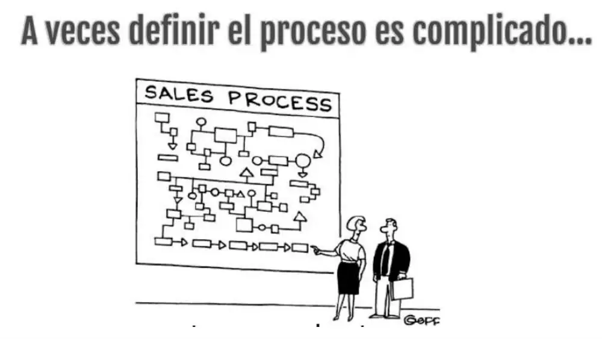
Fuente: diapositiva 2, «Modelos de Mejora del Proceso de Desarrollo de SW», Semana 04.
Planeamiento de la calidad (QP, Quality Planning)
Primer componente de la trilogía de Juran (1986: planificación, control y mejora de la calidad). Consiste en identificar a los clientes y sus necesidades, traducirlas en requisitos y objetivos de calidad medibles, y definir los procesos, recursos, responsables y controles necesarios para alcanzarlos. En SW se materializa en el SQAP del proyecto y en la política/manual de calidad de la organización (ISO 9001, cláusula 6 «Planificación»).
Ej.: antes del primer Sprint del app de citas de EsSalud, el QA Lead fija en el SQAP la meta «tasa de fallos en PROD < 2 %» y el KPI de cobertura ≥ 80 %.
Proceso de SW
Conjunto coherente de actividades, métodos, prácticas y transformaciones que las personas usan para desarrollar y mantener SW y sus productos asociados (planes, SRS, SDD, código, casos de prueba, manuales). Premisa de SPI (Humphrey, SEI): «la calidad de un producto está fuertemente determinada por la calidad del proceso usado para construirlo».
Ej.: el proceso de una fábrica de SW limeña: HU → diseño → código → PR + Code Review → CI/CD → UAT → despliegue.
SPI (Software Process Improvement – Mejora del Proceso de SW)
Disciplina que evalúa el proceso actual de una OU (Organizational Unit – Unidad Organizacional), identifica brechas frente a un modelo de referencia y ejecuta acciones planificadas para aumentar su capacidad/madurez, reduciendo defectos, costos y plazos. Usa ciclos PDCA/PHVA o el modelo IDEAL, y se apoya en un PRM y un PAM.
Ej.: la OTI de una municipalidad detecta 40 % de retrabajo, compara su proceso con la 12207 y crea el proceso faltante de Gestión de la Configuración (SCM) con Git y PR obligatorios.
Modelo de mejora del proceso de SW
Marco que describe «qué» buenas prácticas debe tener un proceso de SW y, a menudo, cómo evaluar su nivel. Se distinguen: (a) modelos de referencia de procesos (ISO/IEC/IEEE 12207, ISO/IEC 15288); (b) modelos de evaluación de capacidad/madurez (ISO/IEC 15504-SPICE, ISO/IEC 33000, CMMI, S6); (c) modelos para pymes (MoProSoft, MPS.BR, COMPETISOFT, ISO/IEC 29110, S7); (d) ciclos de mejora (PDCA, IDEAL, DMAIC).
Ej.: una pyme de Arequipa usa la 12207 como mapa (PRM), ISO/IEC 29110 como perfil ligero y PDCA para cada iteración de mejora.
PRM (Process Reference Model – Modelo de Referencia de Procesos)
Modelo que describe un conjunto de procesos en términos de propósito y resultados (outcomes), sin decir cómo medirlos. La 12207:2017 actúa como PRM para la evaluación según ISO/IEC 33000 (antes 15504-5 usaba la 12207 como PRM).
Ej.: el evaluador toma el proceso 6.3.8 «Aseguramiento de la Calidad» de la 12207 como referencia para revisar el QA de Interbank Digital.
PAM (Process Assessment Model – Modelo de Evaluación de Procesos)
Modelo que añade al PRM los indicadores (prácticas base, productos de trabajo, atributos de proceso) para medir la capacidad de cada proceso en una escala (niveles 0–5 en ISO/IEC 15504/33000). Se profundiza en S6.
Ej.: ISO/IEC 33061 es el PAM de los procesos de SW; con él se califica la SCM de una empresa como «nivel 2: gestionado».
Modelo IDEAL (SEI)
Ciclo de SPI del SEI (Software Engineering Institute, 1996) en 5 fases: Initiating (iniciar: patrocinio), Diagnosing (diagnosticar brechas), Establishing (establecer plan de acción), Acting (actuar: pilotos y despliegue), Learning (aprender y reiniciar). Es el «PDCA» especializado para programas de mejora de procesos.
Ej.: el BCP inicia un programa CMMI (I), hace un SCAMPI de diagnóstico (D), planifica (E), pilota PR obligatorios en 2 squads (A) y documenta lecciones (L).
Trilogía de Juran aplicada al SW
Planificación (SQAP, objetivos, estándares), Control (QC: revisiones, pruebas, quality gates, auditorías) y Mejora (SPI: análisis de causa raíz, acciones correctivas, cambio de proceso). El SQAP cubre sobre todo la planificación y el control; la 12207 y los modelos de madurez sostienen la mejora.
Ej.: SUNAT planifica (SQAP del nuevo SIRE), controla (Quality Gate de SonarQube en CI) y mejora (RCA mensual con Ishikawa 6M de los incidentes).
| Nivel | Qué asegura | Instrumento de S4 | Sesión relacionada |
|---|---|---|---|
| Producto | Que el SW cumpla atributos de calidad | ISO/IEC 25010 (citada en el SQAP como estándar de producto) | S3 |
| Proyecto | Que el proyecto ejecute las actividades de QA planificadas | SQAP (IEEE 730) | S4 |
| Organización / procesos | Que existan procesos definidos, comunes y mejorables | ISO/IEC/IEEE 12207:2017 (PRM) | S4–S5 |
| Capacidad / madurez | Que los procesos sean medibles y comparables | ISO/IEC 15504/33000, CMMI | S6 |
Ojo en el examen
El título del mazo de la profesora es «Modelos de Mejora del Proceso de Desarrollo de SW: ISO/IEC 12207:2017». La 12207 no es por sí sola un modelo de madurez con niveles: es un modelo de referencia de procesos (qué procesos existen y qué resultados producen). Los niveles de capacidad vienen de ISO/IEC 33000/15504 o CMMI (S6).
2. SQA y SQAP: definición, propósito y alcance
SQA (Software Quality Assurance – Aseguramiento de la Calidad del SW)
Según la diapositiva 2: «un modelo sistemático y planeado de todas las acciones necesarias para proveer la confianza adecuada, según los requerimientos técnicos establecidos, de cada producto e ítem del proyecto». Es la definición clásica de QA del IEEE Std 610.12-1990. Cuatro palabras clave: sistemático + planeado + confianza adecuada + conformidad con requisitos técnicos. SQA es preventivo y orientado al proceso; QC (Quality Control) es detectivo y orientado al producto (S1).
Ej.: el equipo SQA de RENIEC no «prueba el DNIe» (eso es QC); audita que cada Sprint cumpla el proceso de revisiones y pruebas definido en el SQAP.
Aseguramiento del producto de SW
Sinónimo de SQA que da la profesora (diap. 2). En IEEE 730-2014, «product assurance» es además una de las 3 áreas de actividades de SQA (junto a implementación del proceso SQA y aseguramiento del proceso).
Ej.: en un contrato del MEF se exige «plan de aseguramiento del producto de SW», es decir, un SQAP.
SQAP (Software Quality Assurance Plan – Plan de Aseguramiento de la Calidad del SW)
Definición destacada de la clase (diap. 4): «documento formal que describe los métodos, herramientas, estándares y responsabilidades necesarios para garantizar que un producto de SW cumpla con los requisitos de calidad establecidos a lo largo de todo su ciclo de vida». Además (diap. 2) el SQAP define cuán adherido a los estándares se debe monitorear y contiene una lista de comprobación (checklist) de las actividades que aseguran la calidad; por cada actividad bajo responsabilidad de SQA se crea un plan de monitoreo.
Ej.: el SQAP del SUM-UNMSM fija método (inspección Fagan), herramienta (SonarQube), estándar (ISO/IEC 25010) y responsable (Admin SQA) para el módulo de matrícula.
Propósito del SQAP
(Diap. 3, en rojo) «Servir como soporte para el desarrollo de un producto de alta calidad, definiendo las actividades mínimas que deben realizar los involucrados para alcanzar dicho objetivo». Ojo con «mínimas»: el SQAP fija el piso obligatorio, no un techo.
Ej.: el SQAP de Yape exige como mínimo Code Review + pruebas unitarias en cada PR; el squad puede añadir pruebas de mutación si desea.
Elementos alcanzados por el plan (4 productos)
(Diap. 3) El plan alcanza: (1) Especificación Formal de los Requerimientos (ERS/SRS), (2) Modelos de Diseño (SDD), (3) Código y Tests generados, (4) Documentación desarrollada.
Ej.: en el SQAP del sistema de admisión UNMSM se revisan la ERS v1.2, el diagrama de componentes, el repositorio Git con sus tests Jest y el manual de usuario.
Etapas y procesos cubiertos por el plan
(Diap. 3) Cubre las etapas de Ingeniería de Requerimientos, Diseño, Implementación y Pruebas, y además define acciones para la Gestión de la Configuración del SW (SCM, Software Configuration Management) y la Gestión de Riesgos. Fórmula: 4 productos × 4 etapas técnicas + 2 procesos de soporte/gestión.
Ej.: el SQAP de Rímac Seguros incluye un capítulo SCM (GitFlow, línea base por release) y otro de riesgos (matriz probabilidad × impacto).
SQA como proceso transversal (paralelo) al ciclo de vida
El diagrama de la diap. 4 muestra las fases Requisitos → Diseño → Codificación → Pruebas → Despliegue y, debajo, una línea continua «PROCESO SQA: Auditorías y Revisiones» conectada a todas las fases. Significa que el SQA es un proceso sombrilla/umbrella (Pressman) que acompaña todo el SDLC (Software Development Life Cycle), no una etapa al final.
Ej.: en Plaza Vea Online, SQA audita la ERS en Requisitos, la arquitectura en Diseño, los PR en Codificación y los informes de UAT antes del despliegue.
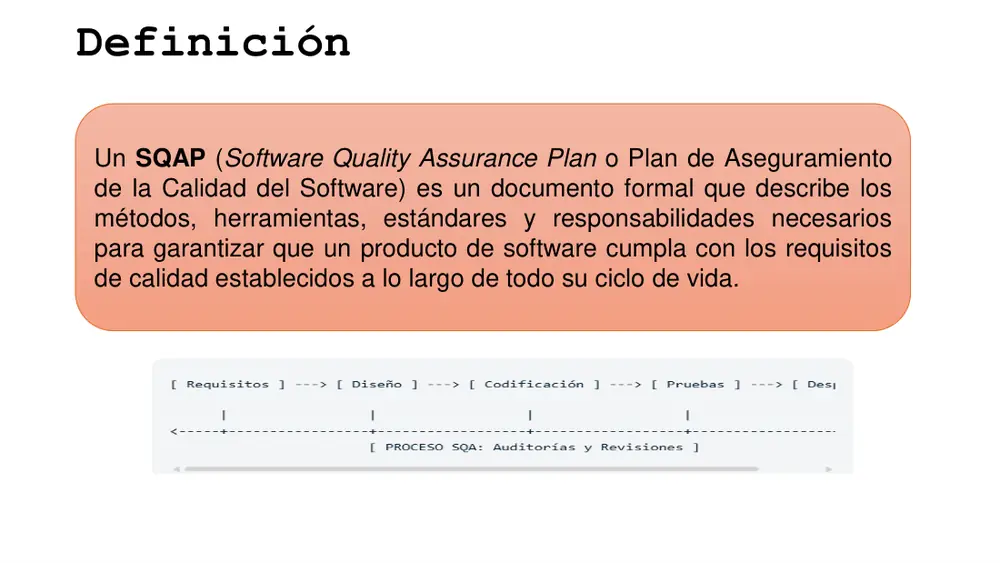
Fuente: diapositiva 4, «Introducción al SQAP», Semana 04.
Checklist y plan de monitoreo del SQAP
El SQAP es operativamente una lista de comprobación: cada actividad de calidad (revisión de ERS, inspección de diseño, auditoría de proceso, prueba de regresión…) tiene responsable, frecuencia, criterio de aceptación y evidencia. El plan de monitoreo indica cómo SQA verificará que esa actividad se ejecutó.
Ej.: ítem del checklist «¿Cada PR tiene ≥ 1 aprobación y QG PASSED?» — monitoreo: SQA revisa semanalmente el reporte de GitHub y registra no conformidades (NC).
No conformidad (NC) y anomalía
No conformidad: incumplimiento de un requisito, estándar o procedimiento (ISO 9000). Anomalía: cualquier condición que se desvía de lo esperado según requisitos, especificaciones o experiencia (IEEE 1044). El responsable de SQA tiene libertad para reportarlas y escalarlas.
Ej.: NC: «el Sprint 5 movió 3 HU a Done sin Code Review»; anomalía: «el cálculo del IGV da 18,01 % en un caso límite».
IEEE Std 730 — Software Quality Assurance Processes (antes: SQA Plans)
- Organismo: IEEE (Institute of Electrical and Electronics Engineers – Instituto de Ingenieros Eléctricos y Electrónicos), Computer Society, comité S2ESC.
- Versiones: 1979 (una de las primeras normas de ingeniería de SW del IEEE), 1981, 1984, 1989, 1998, 2002 «Standard for SQA Plans» y 2014 «Standard for SQA Processes».
- Propósito: establecer los requisitos para iniciar, planificar, controlar y ejecutar el SQA de un proyecto. En la clase: «IEEE 730 para SQAP».
- Estructura 2002: contenido mínimo del SQAP en 16 secciones (ver sección 7 de esta página).
- Estructura 2014: 3 áreas de actividades — implementación del proceso de SQA, aseguramiento del producto y aseguramiento del proceso; el SQAP queda como producto de esos procesos (esquema sugerido en anexo) y se alinea con el proceso de QA de ISO/IEC/IEEE 12207.
- Trampa: IEEE 730 regula el plan/proceso de aseguramiento; NO la calidad del producto (ISO/IEC 25010), ni la V&V detallada (IEEE 1012), ni revisiones/auditorías (IEEE 1028), ni SCM (IEEE 828), ni pruebas (ISO/IEC/IEEE 29119).
Ojo en el examen
SQAP describe métodos, herramientas, estándares y responsabilidades (4 palabras exactas; candidatas a pregunta de completar). Si una opción dice «métodos, costos, cronograma y riesgos», es distractor: eso se parece al plan del proyecto (SDP, Software Development Plan).
Ojo en el examen
La definición de SQA de la clase dice «confianza adecuada», no «garantía total» ni «cero defectos». El SQA reduce la incertidumbre, no elimina los defectos.
3. Organización de la calidad y roles/tareas de SQA
Estructura organizacional de calidad (organigrama del SQAP)
Árbol de 3 niveles (diap. 5): Gerencia del Proyecto / Dirección → dos ramas pares: Líder de Desarrollo (con sus Desarrolladores) y Líder de SQA / Calidad (con sus Auditores / Testers). La rama de calidad no depende del Líder de Desarrollo.
Ej.: en la fintech Tunki, la QA Lead reporta al CTO, no al Tech Lead del squad que audita.
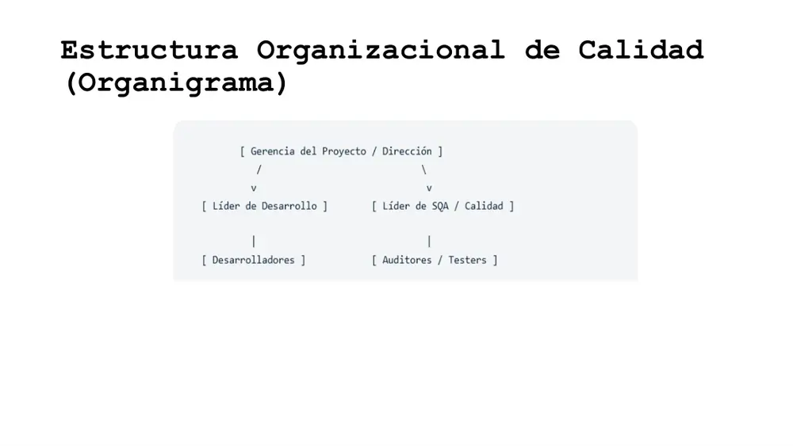
Fuente: diapositiva 5, «Introducción al SQAP», Semana 04.
Independencia del SQA y derecho de escalamiento
(Diap. 8) «El responsable de SQA tiene la libertad de reportar anomalías y no conformidades (si la calidad del producto está en peligro) al siguiente o al nivel más alto en la cadena de liderazgo». La independencia puede ser técnica, gerencial y financiera (IEEE 1012 la usa para definir IV&V, Independent Verification and Validation).
Ej.: si el Jefe de Proyecto del nuevo portal del MINSA presiona para desplegar con 2 defectos críticos abiertos, el Admin SQA escala la NC directamente a la Dirección General de TI.
Administrador SQA (6 tareas)
(1) Establecer un programa de calidad para el proyecto; (2) identificar las actividades de SQA; (3) resolver problemas relacionados con la calidad; (4) auditar y reportar las funciones SQA; (5) monitorear el cumplimiento de lo planificado en el plan SQA; (6) garantizar la calidad de los entregables, la documentación y los procesos usados para producir SW.
Ej.: el Admin SQA del SIAF-MEF publica cada 15 días un informe de auditoría con 4 NC y su estado.
Gerente Técnico (5 tareas)
Nivel organizacional: (1) establecer un programa de calidad para cada proyecto de acuerdo a las políticas organizacionales; (2) revisar y aprobar el plan de SQA de cada proyecto; (3) monitorear las actividades de SQA; (4) resolver cualquier conflicto relacionado con SQA; (5) identificar un grupo independiente para auditar las actividades de SQA de ser preciso.
Ej.: el Gerente Técnico de una consultora contrata a una firma externa de IV&V para auditar el SQA del proyecto de SUNARP.
Jefe de Proyecto (8 tareas)
Nivel proyecto: (1) establecer un programa de calidad para el proyecto según políticas organizacionales; (2) identificar las actividades de SQA requeridas; (3) revisar y aprobar el plan de SQA; (4) identificar los participantes de SQA; (5) implementar las actividades de SQA según el plan; (6) monitorearlas; (7) identificar los factores de calidad para la implementación; (8) identificar, desarrollar y mantener la documentación del proyecto.
Ej.: el PM del app de Interbank define que los factores de calidad prioritarios son seguridad y disponibilidad 99,9 % (ISO/IEC 25010).
Pruebas (5 tareas)
(1) Comentar el plan de SQA; (2) implementar la calidad en las pruebas según el plan; (3) resolver y dar seguimiento a asuntos de calidad de las pruebas del sistema; (4) verificar que los factores de calidad se implementaron en el sistema; (5) implementar las prácticas de pruebas según el documento de pruebas (STP, Software Test Plan).
Ej.: el equipo de testing verifica con JMeter que el login de SUNAT responda en < 2 s, factor de eficiencia definido por el PM.
Diseño y codificación (5 tareas)
(1) Comentar el plan; (2) implementar la calidad en diseño y codificación; (3) resolver asuntos de calidad de diseño, arquitectura y desarrollo; (4) identificar, implementar y evaluar los factores de calidad; (5) implementar diseño, arquitectura, desarrollo, procesos y procedimientos siguiendo los documentos de planeación.
Ej.: el arquitecto de Yape elige microservicios con circuit breaker para cumplir el factor de fiabilidad.
Administración de riesgos (4 tareas)
(1) Dar seguimiento a los riesgos identificados; (2) buscar medidas de contingencia; (3) comentar el plan SQA; (4) notificar al administrador del proyecto cuando un riesgo identificado se convierta en un problema (issue).
Ej.: el riesgo «renuncia del único DBA» se materializa; el gestor de riesgos lo notifica al PM y activa el plan B (DBA de la consultora aliada).
Administrador de requerimientos (4 tareas)
(1) Realizar la ERS (Especificación de Requerimientos de SW = SRS); (2) comentar el plan SQA; (3) implementar calidad en la ERS; (4) analizar los requerimientos.
Ej.: el analista del sistema de becas PRONABEC redacta la ERS según ISO/IEC/IEEE 29148 y elimina requisitos ambiguos como «rápido».
Métricas (4 tareas)
(1) Realizar el plan de métricas; (2) evaluar las métricas recabadas a lo largo del proyecto; (3) comentar el plan SQA; (4) implementar la calidad en el plan de métricas.
Ej.: el analista de métricas mide densidad de defectos (defectos/KLOC) y MTTR por Sprint con un tablero en Grafana.
SCM – Administrador de Configuración (4 tareas)
(1) Revisar y comentar el plan SQA; (2) implementar las actividades de calidad según el plan; (3) resolver los problemas detectados por SQA relacionados con SCM; (4) implementar lo definido en el plan de SCM (SCMP, Software Configuration Management Plan).
Ej.: SQA detecta que el release 2.3 no tiene etiqueta (tag) en Git; el SCM crea la línea base y corrige el procedimiento.
| # | Rol | N.º tareas | Tarea distintiva (para no confundir) |
|---|---|---|---|
| 1 | Administrador SQA | 6 | Auditar y reportar funciones SQA; garantizar calidad de entregables, documentación y procesos |
| 2 | Gerente Técnico | 5 | «Para cada proyecto», políticas organizacionales; resolver conflictos; grupo independiente de auditoría |
| 3 | Jefe de Proyecto | 8 | Identificar participantes de SQA; identificar factores de calidad; mantener documentación |
| 4 | Pruebas | 5 | Verificar que los factores de calidad se implementaron; documento de pruebas |
| 5 | Diseño y codificación | 5 | Identificar, implementar y evaluar factores de calidad; arquitectura |
| 6 | Administración de riesgos | 4 | Contingencia; notificar cuando un riesgo se vuelve problema |
| 7 | Administrador de requerimientos | 4 | Realizar la ERS e implementar calidad en ella |
| 8 | Métricas | 4 | Plan de métricas; evaluar métricas recabadas |
| 9 | SCM (Adm. de Configuración) | 4 | Resolver problemas detectados por SQA relacionados con SCM; plan de SCM |
Fuente: diapositivas 8–13, «Introducción al SQAP», Semana 04. Total: 9 roles, 45 tareas.
Ojo en el examen
Gerente Técnico vs Jefe de Proyecto: ambos «establecen un programa de calidad» y «revisan y aprueban el plan SQA», pero el Gerente Técnico lo hace para cada proyecto (visión organizacional), resuelve conflictos e identifica un grupo independiente de auditoría; el Jefe de Proyecto lo hace para el proyecto, identifica participantes y factores de calidad. «Identificar factores» = Jefe de Proyecto; «identificar, implementar y evaluar factores» = Diseño y codificación; «verificar que se implementaron» = Pruebas.
Ojo en el examen
Casi todos los roles técnicos tienen «Comentar acerca del plan de SQA» (participan en su revisión). Revisar y aprobar el plan corresponde al Gerente Técnico y al Jefe de Proyecto (diap. 9); en la matriz (diap. 14) aprobar el Plan SQA lo hacen Admin SQA + Admin Proyecto.
4. Matriz de responsabilidades del SQAP
Matriz de responsabilidades (tipo RACI simplificada)
Tabla actividades × roles marcada con «X» (diap. 14–16). Columnas: Admin SQA · Admin Proyecto · Adm de Conf. · Desarrollo/Diseño · Pruebas SW · Plan SQA · Req. Es una RACI (Responsible, Accountable, Consulted, Informed – Responsable, Aprobador, Consultado, Informado) sin letras: solo indica participación.
Ej.: en la fila «Aprobar el Plan SQA» solo hay X en Admin SQA y Admin Proyecto: ellos firman el acta.
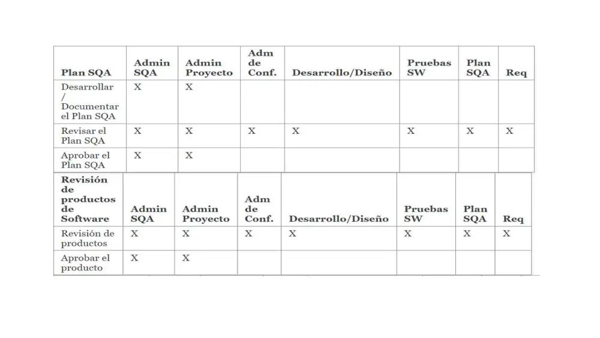
Fuente: diapositiva 14, «Introducción al SQAP», Semana 04.
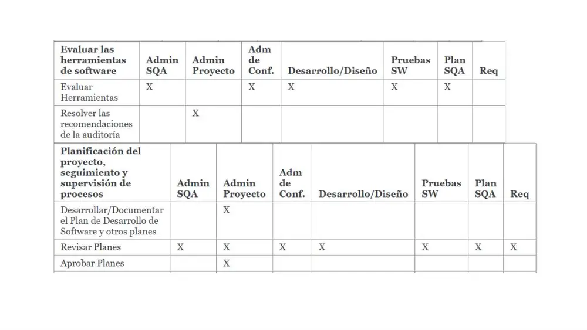
Fuente: diapositiva 15, «Introducción al SQAP», Semana 04.
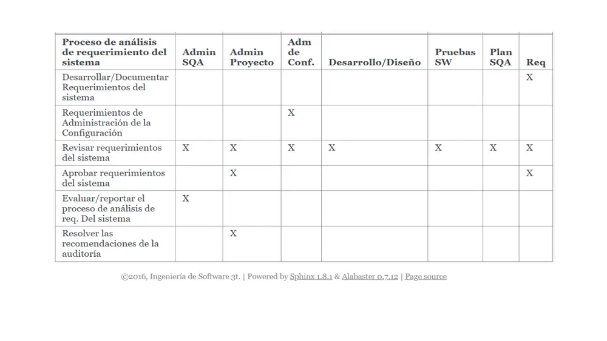
Fuente: diapositiva 16, «Introducción al SQAP», Semana 04 (captura de un SQAP académico publicado con Sphinx, ©2016).
| Bloque / actividad | Admin SQA | Admin Proy. | Adm Conf. | Des./Diseño | Pruebas SW | Plan SQA | Req |
|---|---|---|---|---|---|---|---|
| Desarrollar/Documentar Plan SQA | X | X | |||||
| Revisar Plan SQA | X | X | X | X | X | X | X |
| Aprobar Plan SQA | X | X | |||||
| Revisión de productos | X | X | X | X | X | X | X |
| Aprobar el producto | X | X | |||||
| Evaluar herramientas | X | X | X | X | X | ||
| Resolver recomendaciones de auditoría | X | ||||||
| Desarrollar/Documentar Plan de Desarrollo de SW y otros planes | X | ||||||
| Revisar planes | X | X | X | X | X | X | X |
| Aprobar planes | X | ||||||
| Desarrollar/Documentar requerimientos del sistema | X | ||||||
| Requerimientos de Administración de la Configuración | X | ||||||
| Revisar requerimientos del sistema | X | X | X | X | X | X | X |
| Aprobar requerimientos del sistema | X | X | |||||
| Evaluar/reportar proceso de análisis de req. | X | ||||||
| Resolver recomendaciones de auditoría (req.) | X |
Revisión participativa
Patrón de la matriz: toda fila «Revisar…» tiene X en las 7 columnas. La calidad se construye con la mirada de todos los involucrados (enfoque TQM, S2), aunque la aprobación esté concentrada.
Ej.: la ERS del sistema de trámite documentario del Poder Judicial la revisan SQA, PM, SCM, devs, testers y analista antes de aprobarla.
Separación auditor / auditado
«Resolver las recomendaciones de la auditoría» es solo del Admin Proyecto (aparece 2 veces). SQA audita y reporta; quien corrige es la gestión del proyecto. Si SQA resolviera sus propios hallazgos perdería objetividad.
Ej.: SQA reporta que faltan pruebas de regresión en el release del Banco de la Nación; el PM asigna la acción correctiva al equipo de testing.
Aseguramiento del proceso vs aseguramiento del producto
«Evaluar/reportar el proceso de análisis de requerimientos» es solo del Admin SQA: SQA evalúa si el proceso se siguió (process assurance). En cambio, aprobar el producto lo hacen Admin SQA + Admin Proyecto (product assurance). Son 2 de las 3 áreas de IEEE 730-2014.
Ej.: SQA comprueba que la elicitación de RENIEC usó talleres y acta firmada (proceso), aunque no decide el contenido de cada requisito (producto).
Ojo en el examen
Distractores típicos: «SQA aprueba los planes de desarrollo» (falso: solo Admin Proyecto), «SQA resuelve las recomendaciones de auditoría» (falso: Admin Proyecto), «Req aprueba solo él los requerimientos» (falso: Admin Proyecto + Req), «el Admin Proyecto evalúa herramientas» (falso: es de todos menos Admin Proyecto y Req).
5. Verificación y Validación (V&V) dentro del SQAP
Verificación
«¿Hacemos el producto bien?» (building the product right, Boehm 1979): confirmar, mediante evidencia objetiva, que un producto de trabajo cumple su especificación y estándares. En la 12207 (diap. 13 del mazo de procesos): «comprobar que el SW se construyó correctamente».
Ej.: inspeccionar que el SDD del SIAF implemente las 12 reglas de la ERS (estático, contra especificación).
Validación
«¿Hacemos el producto correcto?» (building the right product): confirmar que el producto satisface el uso previsto y la necesidad real del usuario en su entorno. En la 12207: «comprobar que se construyó el SW correcto para el usuario».
Ej.: cajeros del BCP usan el prototipo del nuevo sistema de ventanilla y confirman que reduce la atención de 6 a 3 min.
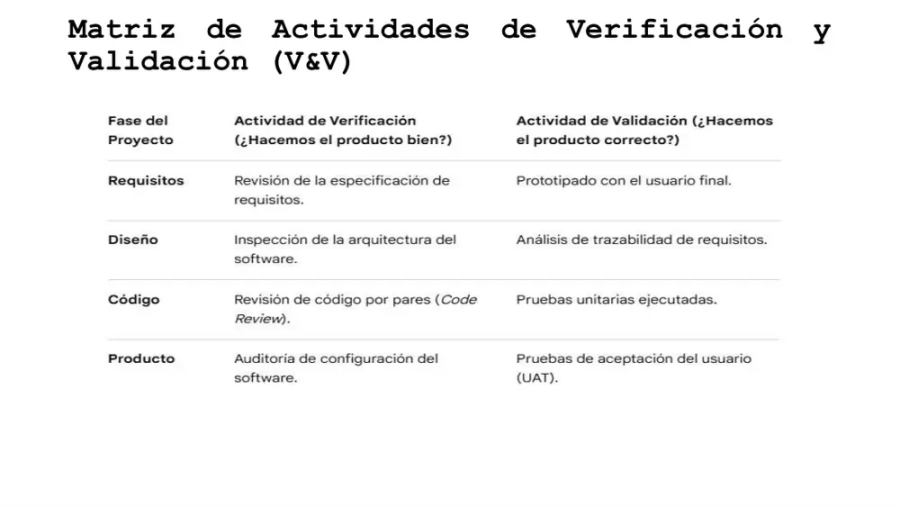
Fuente: diapositiva 6, «Introducción al SQAP», Semana 04.
| Fase | Verificación (¿hacemos el producto bien?) | Validación (¿hacemos el producto correcto?) |
|---|---|---|
| Requisitos | Revisión de la especificación de requisitos | Prototipado con el usuario final |
| Diseño | Inspección de la arquitectura del SW | Análisis de trazabilidad de requisitos |
| Código | Revisión de código por pares (Code Review) | Pruebas unitarias ejecutadas |
| Producto | Auditoría de configuración del SW | Pruebas de aceptación del usuario (UAT) |
Análisis de trazabilidad de requisitos (RTM)
Comprobación de que cada requisito está enlazado hacia adelante (diseño, código, pruebas) y hacia atrás (necesidad del stakeholder) mediante una RTM (Requirements Traceability Matrix – Matriz de Trazabilidad de Requisitos). En la matriz de la profesora figura como validación en la fase de Diseño.
Ej.: la RTM del sistema de admisión muestra que el RF-07 «publicar resultados» no tiene ningún componente de diseño asociado.
UAT (User Acceptance Testing – Pruebas de Aceptación del Usuario)
Pruebas ejecutadas por el usuario/cliente, en un entorno similar a PROD, para decidir si acepta el producto. Es la validación por excelencia en la fase Producto y la tarea de la actividad «Aceptación del Producto» del proceso de Adquisición de la 12207.
Ej.: en EduTech, los directores de colegio ingresan transacciones simuladas reales en staging y confirman que el dinero llega a la cuenta correcta.
Auditoría de configuración (FCA/PCA)
Verificación en la fase Producto de que el ítem entregado coincide con su documentación: FCA (Functional Configuration Audit – auditoría funcional: el producto cumple los requisitos probados) y PCA (Physical Configuration Audit – auditoría física: el build entregado corresponde a la línea base y a su documentación). Complemento de IEEE 828/IEEE 1028.
Ej.: antes de entregar el release 3.0 a ESSALUD se comprueba que el .war desplegado corresponde al tag v3.0 y al manual v3.0 (PCA).
IV&V (Independent Verification and Validation)
V&V realizada por una organización independiente técnica, gerencial y financieramente del desarrollador (IEEE 1012). Se exige en sistemas críticos (banca, salud, aviación).
Ej.: la SBS exige que una firma externa haga IV&V del core bancario migrado de una caja municipal.
IEEE Std 1012 — System, Software and Hardware Verification and Validation
- Organismo: IEEE. Versiones: 1986, 1998, 2004, 2012, 2016 (vigente, con revisiones posteriores).
- Propósito: definir procesos, actividades y tareas de V&V a lo largo del ciclo de vida y el contenido del SVVP (Software Verification and Validation Plan).
- Estructura: niveles de integridad (1 a 4) que escalan el rigor de V&V; tareas por proceso del ciclo de vida; independencia técnica, gerencial y financiera para IV&V.
- Trampa: en IEEE 1012 la trazabilidad y las pruebas unitarias se catalogan como tareas de verificación; la profesora las pone en la columna de validación. En el examen responde según la matriz de clase y, si piden justificar, explica la diferencia.
Ojo en el examen
En la matriz de clase todas las verificaciones son estáticas (revisión, inspección, code review, auditoría) y las validaciones implican usuario o ejecución (prototipo, trazabilidad hacia la necesidad, pruebas unitarias ejecutadas, UAT). No asumas «verificación = sin usuario, validación = con usuario» en todos los casos: las pruebas unitarias no involucran usuario y aquí son validación. La regla de la clase es la tabla.
6. Pirámide de pruebas y métricas de control del SQAP
Pirámide de pruebas
(Diap. 7) «Incluida en la sección de control del SQAP, define la proporción ideal de los esfuerzos de prueba automatizados». Cúspide: Pruebas de Interfaz (UI) – pocas y costosas; medio: Integración / API – medianas; base: Unitarias – muchas, rápidas y económicas. Atribuida a Mike Cohn (2009). Proporción orientativa 70/20/10 (complemento, no está en la diapositiva).
Ej.: el app de Rappi Perú tiene 1 800 tests Jest (unit), 300 de API con Supertest y 40 E2E con Cypress.
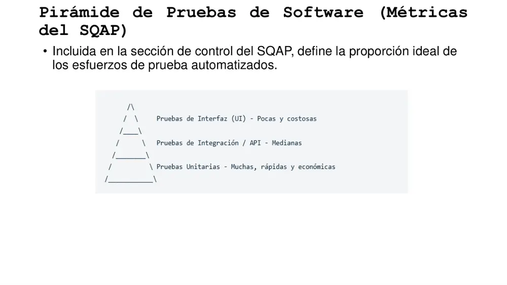
Fuente: diapositiva 7, «Introducción al SQAP», Semana 04.
Antipatrón «cono de helado»
Pirámide invertida: muchas pruebas manuales/UI y pocas unitarias. Produce suites lentas, frágiles (flaky) y costosas de mantener; retrasa el feedback del pipeline CI/CD.
Ej.: un ERP municipal con 500 casos manuales de Selenium y 20 unitarias tarda 3 días en regresión: cono de helado.
Cobertura de código (code coverage)
Porcentaje de líneas/ramas ejecutadas por las pruebas automatizadas. Métrica de control del SQAP y criterio del quality gate (C1: ≥ 85 %; AlfaShop: ≥ 80 % en componentes críticos del back-end).
Ej.: si el módulo de pagos tiene 1 000 líneas y las pruebas ejecutan 820, la cobertura es 82 %.
Densidad de defectos
Defectos encontrados ÷ tamaño (KLOC, miles de LOC – Lines of Code, o puntos de función). AlfaShop exige < 0,5 fallos por cada 1 000 líneas de código modificadas.
Ej.: 6 defectos en un release que modificó 15 KLOC → 0,4 def/KLOC → cumple.
MTTR (Mean Time To Repair/Resolve – Tiempo Medio de Reparación/Resolución)
Promedio del tiempo desde que se reporta un defecto/incidente hasta que se resuelve. En AlfaShop: bugs bloqueantes corregidos en < 4 horas. Es una métrica DORA (DevOps Research and Assessment) junto con frecuencia de despliegue, lead time y tasa de fallo de cambios.
Ej.: 3 bloqueantes resueltos en 2 h, 5 h y 2 h → MTTR = 3 h → cumple < 4 h.
Criterios de entrada y salida (entry/exit criteria)
(Diap. 19) Condiciones exactas para iniciar y dar por aprobada una fase de pruebas. Ejemplo de clase: «cero defectos críticos abiertos». Convierten la calidad en decisión objetiva (go/no-go).
Ej.: entrada a UAT de SUNAT: build estable y regresión ≥ 95 %; salida: 0 críticos, ≤ 3 mayores con workaround.
Quality Gate (QG – puerta de calidad)
Conjunto de umbrales que un build debe superar para avanzar en el pipeline (p. ej., en SonarQube: cobertura del código nuevo ≥ 80 %, 0 bugs/vulnerabilidades nuevas críticas, duplicación < 3 %). Si falla, el pipeline se detiene.
Ej.: en la DoD de C1, «SonarQube califica el código con Quality Gate: PASSED (sin deuda técnica crítica)».
Ojo en el examen
La pirámide aparece en la sección de control del SQAP (no en la de organización ni en la de estándares). Y define la proporción de esfuerzos de prueba automatizados.
7. Los 7 elementos claves de un SQAP y la plantilla IEEE 730
Elemento 1 · Propósito y Alcance
Establecer objetivos (qué se espera lograr; p. ej. «reducir la tasa de fallos en producción a menos del 2 %» o cumplir regulaciones) y delimitar el alcance (qué componentes, módulos o fases están cubiertos y cuáles quedan fuera).
Ej.: SQAP del app de Yape: cubre front móvil y API de transferencias; excluye el core del BCP (gestionado por otro SQAP).
Elemento 2 · Roles y Responsabilidades
Asignar el equipo de QA (ingenieros QA, líderes de prueba, auditores) y fijar responsabilidades: quién aprueba entregables, quién audita procesos y quién mitiga los riesgos de calidad.
Ej.: «QA Lead aprueba criterios de aceptación; PM aprueba el release; DevOps mitiga riesgos de disponibilidad».
Elemento 3 · Estándares y Metodologías
Elegir el marco: IEEE 730 para SQAP, ISO/IEC 25010 para calidad de producto, o metodologías ágiles/DevOps; y definir guías internas: reglas de codificación (clean code), estándares de documentación y convenciones de control de versiones de cumplimiento obligatorio.
Ej.: AlfaShop adopta Airbnb JavaScript Style Guide + ESLint/Prettier y HU en formato Gherkin.
Elemento 4 · Actividades de Revisión y Auditoría
Revisiones técnicas formales (code reviews, revisiones de arquitectura, validación de requerimientos) y auditorías de proceso con calendario para verificar que el equipo realmente siga el proceso acordado.
Ej.: el QA Lead de AlfaShop audita al final de cada Sprint que ninguna HU pasó a Done sin cumplir la DoD.
Elemento 5 · Proceso de Pruebas
Tipos de prueba (unitarias, integración, funcionales, rendimiento, seguridad, aceptación) y criterios de éxito con condiciones exactas de entrada y salida (p. ej. «cero defectos críticos abiertos»).
Ej.: AlfaShop: despliegue a PROD solo con 0 críticos, 100 % E2E críticas en verde y regresión ≥ 98 %.
Elemento 6 · Gestión de Configuración y Cambios
Control de versiones (Git branching model: GitFlow, GitHub Flow, trunk-based) y control de cambios: el flujo de un cambio o reporte de error desde que se detecta hasta que se despliega la solución en producción.
Ej.: bug en Jira → rama fix/123 → PR con 2 aprobaciones → CI verde → merge a main → despliegue automático.
Elemento 7 · Métricas y Herramientas
Métricas de calidad (cobertura de código, densidad de defectos, tiempo de resolución de bugs) y herramientas (stack): Jira para seguimiento, SonarQube para análisis estático, Selenium o Cypress para automatización.
Ej.: AlfaShop: Jira Software, SonarQube (QG estricto), GitHub Actions (CI), Jest, Cypress y Supertest.
| # | Elemento clave (clase) | Sub-elementos | Sección equivalente IEEE 730-2002 |
|---|---|---|---|
| 1 | Propósito y Alcance | Establecer objetivos · Delimitar alcance | 1 Propósito |
| 2 | Roles y Responsabilidades | Asignar equipo de QA · Fijar responsabilidades | 3 Gestión (organización, tareas, roles) |
| 3 | Estándares y Metodologías | Elegir marco · Definir guías internas | 5 Estándares, prácticas, convenciones y métricas |
| 4 | Revisión y Auditoría | Revisiones técnicas formales · Auditorías de proceso | 6 Revisiones de SW |
| 5 | Proceso de Pruebas | Tipos de prueba · Criterios de éxito | 7 Pruebas |
| 6 | Configuración y Cambios | Control de versiones · Control de cambios | 8 Reporte de problemas y acciones correctivas (+ SCMP) |
| 7 | Métricas y Herramientas | Métricas de calidad · Herramientas | 5 (métricas) y 9 Herramientas, técnicas y metodologías |
Fuente: diapositivas 17–20, «Introducción al SQAP», Semana 04; columna derecha: complemento IEEE 730-2002.
Contenido mínimo del SQAP según IEEE 730-2002 (16 secciones)
1 Propósito · 2 Documentos de referencia · 3 Gestión · 4 Documentación (mínimo SRS, SDD, SVVP, SVVR, documentación de usuario, SCMP) · 5 Estándares, prácticas, convenciones y métricas · 6 Revisiones de SW (SRR, PDR, CDR, revisión del SVVP, auditoría funcional, auditoría física, auditorías en proceso, revisiones de gestión, revisión del SCMP, revisión post-implementación PIR) · 7 Pruebas · 8 Reporte de problemas y acciones correctivas · 9 Herramientas, técnicas y metodologías · 10 Control de medios · 11 Control de proveedores · 12 Registros (recolección, mantenimiento, retención) · 13 Capacitación · 14 Gestión de riesgos · 15 Glosario · 16 Procedimiento de cambios e historial del SQAP. (Complemento.)
Ej.: un SQAP para un contrato con el Estado peruano suele exigir «Control de proveedores» (sección 11) cuando parte del desarrollo se terceriza.
SRR / PDR / CDR (revisiones de hitos)
SRR (Software Requirements Review – revisión de requisitos), PDR (Preliminary Design Review – revisión de diseño preliminar), CDR (Critical Design Review – revisión de diseño crítico/detallado). Revisiones formales mínimas de IEEE 730-2002 que actúan como puertas entre fases.
Ej.: el proyecto de un sistema de tráfico aéreo de CORPAC no pasa a codificar sin aprobar el CDR.
IEEE 730-2014: tres áreas de actividades de SQA
(1) Implementación del proceso de SQA (establecer procesos SQA, coordinar con procesos relacionados, documentar la planificación — el SQAP —, ejecutarlo, gestionar registros, evaluar la independencia y objetividad organizacional); (2) Aseguramiento del producto (evaluar planes, producto y soporte del ciclo de vida para conformidad y aceptabilidad; medir productos); (3) Aseguramiento del proceso (evaluar procesos del ciclo de vida, entornos y procesos de subcontratistas; medir procesos; evaluar habilidades del personal).
Ej.: «evaluar procesos del subcontratista» aplica cuando el BCP terceriza el QA de su app a una consultora india.
Ojo en el examen
Los 7 «elementos claves» son la versión didáctica de la profesora, no la numeración oficial de IEEE 730 (que en 2002 tenía 16 secciones). Si una pregunta dice «según la clase, el elemento 6 del SQAP es…», la respuesta es Gestión de Configuración y Cambios. No confundas el orden 4 (Revisión/Auditoría) con 5 (Pruebas).
Ojo en el examen
En el elemento 3 la clase pone IEEE 730 para SQAP e ISO/IEC 25010 para calidad de producto. Un distractor clásico invierte los papeles («ISO/IEC 25010 para el plan, IEEE 730 para el producto»).
8. El SQAP en entornos ágiles (Scrum + DevOps)
En metodologías tradicionales el SQAP era un documento estático de cien páginas; en Scrum/DevOps se vuelve dinámico y automatizado y se integra en el pipeline de CI/CD (Continuous Integration / Continuous Delivery-Deployment – Integración y Entrega/Despliegue Continuos).
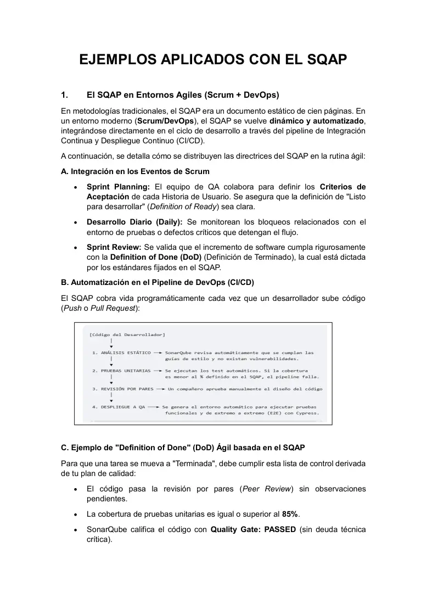
Fuente: página 1, «Ejemplos aplicados con el SQAP», Semana 04.
DoR (Definition of Ready – Definición de Listo)
Criterios que una HU (Historia de Usuario) debe cumplir para entrar a un Sprint: clara, estimada, con criterios de aceptación y dependencias resueltas. En C1 el equipo de QA colabora en el Sprint Planning definiendo los criterios de aceptación y asegurando una DoR clara.
Ej.: la HU «pagar con Yape» no entra al Sprint sin el criterio Gherkin «Dado un saldo ≥ monto, cuando confirmo, entonces…».
DoD (Definition of Done – Definición de Terminado)
Lista de control que todo incremento debe cumplir para considerarse terminado; en C1 está dictada por los estándares del SQAP y se valida en la Sprint Review. DoD de clase (5 criterios): (1) peer review sin observaciones pendientes; (2) cobertura unitaria ≥ 85 %; (3) SonarQube Quality Gate: PASSED sin deuda técnica crítica; (4) regresión automatizada con 100 % de éxito; (5) documentación técnica actualizada en Wiki/Confluence.
Ej.: una HU con 84 % de cobertura no pasa a Done aunque funcione en la demo.
SQAP en los eventos de Scrum
Sprint Planning: QA define criterios de aceptación y DoR. Daily: se monitorean bloqueos del entorno de pruebas o defectos críticos que detienen el flujo. Sprint Review: se valida el incremento contra la DoD del SQAP. (La Retrospective no se menciona en el ejemplo; es el espacio natural de mejora PDCA del proceso.)
Ej.: en la Daily del squad de Interbank se reporta «staging caído desde ayer», bloqueo que SQA registra como riesgo.
Pipeline CI/CD como SQAP ejecutable
Cada etapa automatiza un control del plan: (1) Análisis estático (SonarQube: guías de estilo y vulnerabilidades, técnica estática automática, SAST – Static Application Security Testing); (2) Pruebas unitarias (dinámica automática; si la cobertura < % del SQAP, falla); (3) Revisión por pares (estática manual: un compañero aprueba el diseño del código); (4) Despliegue a QA (entorno automático, pruebas funcionales y E2E – End-to-End con Cypress).
Ej.: un PR en GitHub de Plaza Vea dispara GitHub Actions; el QG falla por 2 code smells críticos y el merge se bloquea.
DevOps
Cultura y conjunto de prácticas que integra Desarrollo (Dev) y Operaciones (Ops) para entregar cambios frecuentes y confiables mediante automatización (CI/CD, IaC – Infrastructure as Code, monitoreo). En calidad, desplaza los controles «a la izquierda» (shift-left) dentro del pipeline.
Ej.: EduTech despliega con Terraform (IaC) y monitorea con Grafana; las pruebas corren en cada commit.
Ojo en el examen
DoR se trabaja en el Sprint Planning; DoD se valida en la Sprint Review. En el pipeline de clase el orden es estático → unitarias → revisión por pares → despliegue a QA: la revisión humana va después de los controles automáticos (para no gastar tiempo humano en código que ni compila ni pasa tests).
9. Ejemplo de SQAP con plantilla IEEE 730: e-commerce «AlfaShop»
Proyecto: plataforma e-commerce AlfaShop · Versión 1.0 · 27/09/2026 · Responsable: Equipo de QA & DevOps. Sus 7 secciones coinciden, en el mismo orden, con los 7 elementos claves de la clase.
| Sección | Contenido de AlfaShop | Cifras / herramientas a memorizar |
|---|---|---|
| 1 Propósito y Alcance | Plataforma segura, rápida y libre de defectos críticos antes del lanzamiento. Alcance: Front-end React, Back-end Node.js/Express, pasarela Stripe. Excluye pruebas de carga de servidores de BD de respaldo (proveedor de nube). | React · Node.js/Express · Stripe |
| 2 Organización | 1 QA Lead, 2 QA Automation, 4 Desarrolladores, 1 DevOps (8 personas). QA Lead aprueba criterios de aceptación y audita el proceso semanalmente; QA Automation mantiene scripts E2E y de API; devs ejecutan pruebas unitarias locales y corrigen con prioridad. | 1 + 2 + 4 + 1 = 8 |
| 3 Estándares | Airbnb JavaScript Style Guide obligatoria; Prettier + ESLint; HU en Jira con 3 secciones: «Como/quiero/para», criterios en Gherkin (Given-When-Then) y Riesgos Asociados. | 3 secciones por HU |
| 4 Revisiones y Auditorías | Peer review en GitHub con voto de ≥ 2 desarrolladores séniores antes de fusionar; auditoría rápida del QA Lead al final de cada Sprint (cada 2 semanas). | 2 séniores · Sprint de 2 semanas |
| 5 Pruebas | Unitarias con Jest; API con Postman/Newman; E2E de flujos críticos (Login, Carrito, Pago) con Cypress. Despliegue: 0 críticos/bloqueantes abiertos, 100 % E2E críticas en verde, regresión ≥ 98 %. | 0 · 100 % · 98 % |
| 6 Configuración y Cambios | GitHub Flow (feature branches cortas → main vía PR validados). Bug en Jira con 5 campos: pasos para reproducir, resultado esperado, resultado obtenido, captura/log, severidad (Bloqueante, Alta, Media, Baja). | 5 campos · 4 severidades |
| 7 Métricas y Herramientas | Cobertura ≥ 80 % en componentes críticos del back-end; densidad < 0,5 fallos/1 000 LOC modificadas; MTTR de bloqueantes < 4 h. Stack: Jira, SonarQube (QG estricto), GitHub Actions, Jest, Cypress, Supertest. | 80 % · 0,5/KLOC · 4 h |
Fuente: páginas 2–3, «Ejemplos aplicados con el SQAP», Semana 04.
Gherkin (Given-When-Then)
Lenguaje estructurado de BDD (Behavior-Driven Development) para escribir criterios de aceptación ejecutables: Given (dado un contexto), When (cuando ocurre una acción), Then (entonces se espera un resultado).
Ej.: Dado un carrito con S/ 120, cuando aplico el cupón ALFA10, entonces el total es S/ 108.
GitHub Flow
Estrategia de ramas ligera: una rama main siempre desplegable y ramas de característica (feature branches) cortas que se integran por PR (Pull Request) revisado y validado por CI. Más simple que GitFlow (que usa develop, release y hotfix).
Ej.: feature/cupones → PR → 2 aprobaciones séniores + GitHub Actions verde → merge a main.
Severidad de un defecto
Grado de impacto del defecto sobre el sistema (Bloqueante, Alta, Media, Baja en AlfaShop). No confundir con prioridad (urgencia de corrección según el negocio).
Ej.: el botón «Pagar» no responde → Bloqueante; logo pixelado en la home → Baja severidad, aunque marketing le dé prioridad alta.
Exclusión del alcance y riesgo de proveedor
Declarar qué queda fuera evita expectativas falsas, pero traslada el riesgo a un tercero: debe cubrirse con un SLA (Service Level Agreement – Acuerdo de Nivel de Servicio) y con «control de proveedores» (sección 11 de IEEE 730-2002).
Ej.: AlfaShop excluye la carga de la BD de respaldo; si el proveedor de nube no garantiza un RTO por SLA, el riesgo queda sin dueño.
Ojo en el examen (análisis crítico de AlfaShop)
- Inconsistencia de frecuencia: 2.2 dice que el QA Lead audita «semanalmente»; 4.2 dice «al final de cada Sprint (cada 2 semanas)».
- Umbrales distintos entre ejemplos: C1 exige cobertura ≥ 85 % y regresión 100 %; AlfaShop exige ≥ 80 % (solo componentes críticos del back-end) y ≥ 98 %. La calidad es contextual: cada SQAP fija su umbral.
- Peer review: C1 basta 1 compañero; AlfaShop exige 2 séniores con solo 4 devs → posible cuello de botella.
- Ausencias: el propósito pide «segura, rápida», pero no hay pruebas de seguridad (SAST/DAST, PCI DSS para pagos con tarjeta) ni de rendimiento; no hay sección propia de gestión de riesgos ni flujo completo de control de cambios.
- Duplicidad: Postman/Newman (5.1) y Supertest (7.2) cubren ambos pruebas de API.
- Pirámide respetada: muchas unitarias (Jest), intermedias de API, pocas E2E (3 flujos críticos con Cypress).
10. ISO/IEC/IEEE 12207:2017: historia, definición, propósito y destinatarios
ISO/IEC/IEEE 12207:2017 (definición de clase)
«Estándar internacional que define un conjunto exhaustivo de procesos, actividades y tareas orientadas a mejorar el desarrollo, adquisición, operación y mantenimiento de los sistemas de SW. La versión 2017 alinea la ingeniería de SW con la ingeniería de sistemas (integrándose con la ISO/IEC 15288) y se adapta a metodologías modernas como marcos ágiles y DevOps». Jerarquía: proceso → actividades → tareas. Dice QUÉ procesos deben existir, no impone un modelo de ciclo de vida (cascada, incremental, ágil).
Ej.: una startup limeña que usa Scrum puede declarar conformidad adaptada con la 12207 sin abandonar sus Sprints.
Historia de versiones
(Diap. 3) 1.ª edición 1995; modificaciones en 2002 y 2004 (Enmiendas 1 y 2); 2.ª edición febrero 2008; 3.ª edición noviembre 2017, trabajo conjunto de ISO (International Organization for Standardization), IEC (International Electrotechnical Commission) e IEEE. En Perú, INACAL adoptó la versión 2008 como NTP-ISO/IEC 12207:2016 (S5).
Ej.: pregunta trampa: «¿qué edición incorporó al IEEE como coautor?» → la 3.ª (2017).
| Versión | Año | Estructura (complemento) |
|---|---|---|
| ISO/IEC 12207:1995 (1.ª) | 1995 | 17 procesos en 3 categorías: primarios (5), de apoyo (8), organizacionales (4) |
| Amd 1 / Amd 2 | 2002 / 2004 | Añaden propósito y resultados a los procesos para usarlos como PRM de ISO/IEC 15504 |
| ISO/IEC 12207:2008 (2.ª) | feb-2008 | 43 procesos en 7 grupos (4 de contexto del sistema + 3 específicos de SW: implementación, soporte y reúso) |
| ISO/IEC/IEEE 12207:2017 (3.ª) | nov-2017 | 30 procesos en 4 grupos, idénticos en estructura a ISO/IEC/IEEE 15288:2015 |
Propósito de la 12207
(Diap. 5) «Proporcionar una estructura común para que exista un lenguaje común entre: compradores, proveedores, desarrolladores, personal de mantenimiento, operadores, gestores y técnicos, y todos los involucrados en el desarrollo del SW». No certifica productos: unifica vocabulario de procesos.
Ej.: cuando el MINEDU (comprador) y una consultora (proveedor) dicen «proceso de Validación», ambos entienden lo mismo gracias a la 12207.
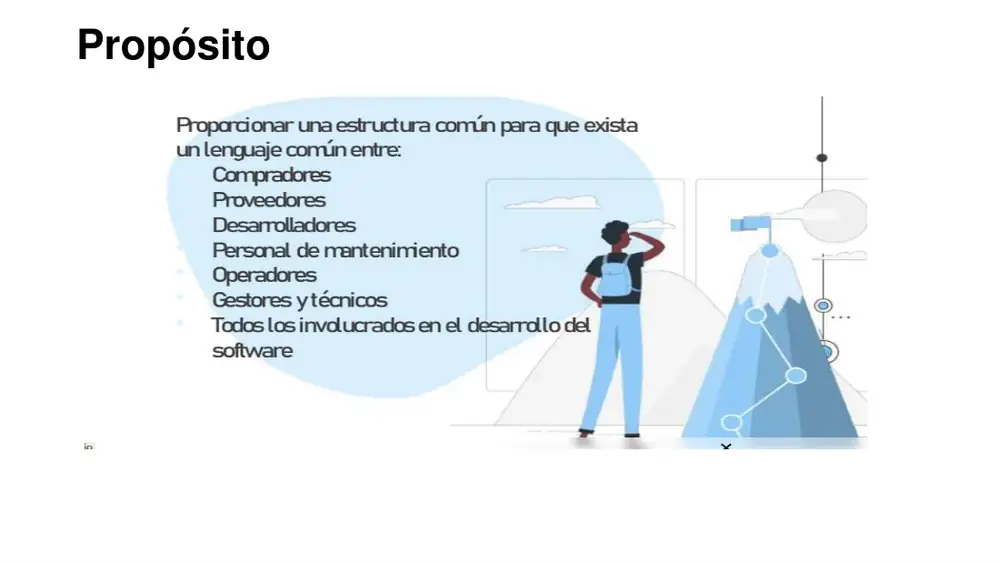
Fuente: diapositiva 5, «Modelos de Mejora del Proceso de Desarrollo de SW», Semana 04.
Destinatarios de la 12207 (4)
(Diap. 6) Organización de SW: ayudar a establecer un entorno de trabajo. Proyecto: seleccionar una infraestructura y emplear todos los elementos de un ciclo de vida establecido. Comprador o proveedor: desarrollar un acuerdo sobre los procesos y actividades a manejar. Asesores: realizar evaluaciones que apoyen la mejora de los procesos de la organización.
Ej.: un asesor contratado por PRODUCE usa la 12207 como PRM para evaluar a 10 mypes de SW antes de un programa de mejora (asesores).
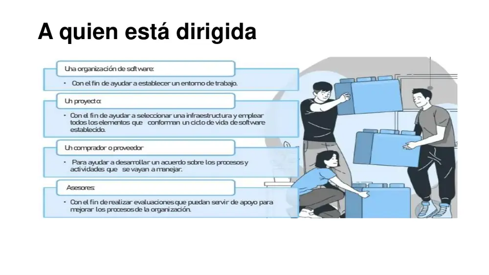
Fuente: diapositiva 6, «Modelos de Mejora del Proceso de Desarrollo de SW», Semana 04.
Adaptación (tailoring) y conformidad
La 12207:2017 permite adaptar procesos (Anexo A) a las características del proyecto u organización. Se declara conformidad plena (todos los procesos/resultados requeridos) o conformidad adaptada (subconjunto justificado). (Complemento.)
Ej.: una pyme sin productos en retiro omite el proceso de Retirada y lo justifica: conformidad adaptada.
ISO/IEC/IEEE 12207:2017 — Systems and software engineering — Software life cycle processes
- Organismos: ISO + IEC (comité conjunto ISO/IEC JTC 1/SC 7) + IEEE Computer Society.
- Versión: 3.ª edición, noviembre 2017; reemplaza a ISO/IEC 12207:2008 e IEEE Std 12207-2008.
- Propósito: marco común de procesos del ciclo de vida del SW; lenguaje común entre adquirientes, proveedores y demás partes; base para establecer, evaluar (PRM) y mejorar procesos.
- Estructura: 4 grupos y 30 procesos: Acuerdo (2), Habilitación de proyectos organizacionales (6), Gestión técnica (8), Técnicos (14). Cada proceso: título, propósito, resultados (outcomes), actividades y tareas. Gemela de ISO/IEC/IEEE 15288.
- Trampa: atribuirle 43 procesos en 7 grupos (eso es la 2008) o 17 procesos en primarios/apoyo/organizacionales (eso es la 1995). Tampoco tiene niveles de madurez.
ISO/IEC/IEEE 15288 — System life cycle processes
- Organismos: ISO/IEC JTC 1/SC 7 + IEEE. Versiones: 2002, 2008, 2015, 2023.
- Propósito: procesos del ciclo de vida de sistemas (HW + SW + personas + procedimientos).
- Estructura: los mismos 4 grupos y 30 procesos que la 12207:2017; la 12207 los aplica a sistemas de SW.
- Trampa: la 15288 no es «la versión antigua» de la 12207; son normas hermanas (sistemas vs SW) alineadas en 2015/2017.
Ojo en el examen
En portadas y en el caso EduTech la profesora escribe «ISO/IEC 12207:2017» o «ISO 12207:2017»; el nombre exacto es ISO/IEC/IEEE 12207:2017. Y la NTP peruana (S5) es NTP-ISO/IEC 12207:2016, adopción de la versión 2008, no de la 2017.
11. Estructura de la 12207:2017: 4 categorías, 30 procesos y atributos
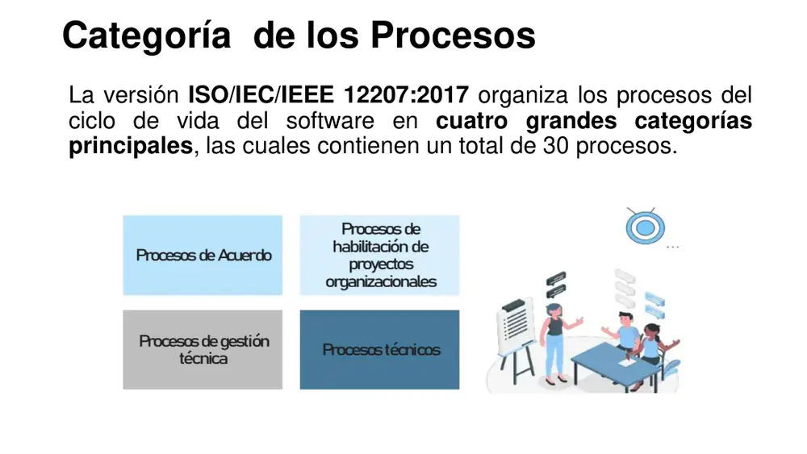
Fuente: diapositiva 7, «Modelos de Mejora del Proceso de Desarrollo de SW», Semana 04.
Categoría (grupo) de procesos
Agrupación de procesos con una finalidad común. La 12207:2017 tiene 4: Acuerdo (relaciones comprador-proveedor), Habilitación organizacional (capacidad y recursos de la organización), Gestión técnica / de proyectos (planificar, controlar y apoyar un proyecto) y Técnicos (transformar requisitos en producto y operarlo hasta su retiro).
Ej.: «firmar el contrato con SUNAT» → Acuerdo; «capacitar a los devs en OWASP» → Habilitación (RR.HH.); «medir el avance vs línea base» → Gestión; «desplegar» → Técnicos (Transición).
Atributos de cada proceso (5)
(Diap. 8) Título: transmite el alcance de todo el proceso. Propósito: define las metas de ejecutar el proceso. Salidas (outcomes): resultado observable esperado de la ejecución exitosa. Actividades: conjunto de tareas cohesivas. Tareas: requerimientos, recomendaciones o acciones que conllevan al logro de los resultados.
Ej.: Gestión de Riesgos → Propósito: identificar, analizar, tratar y monitorear riesgos; Salida: «los riesgos se identifican y se tratan»; Actividad: Tratamiento; Tarea: «establecer planes de mitigación o contingencia».

Fuente: diapositiva 8, «Modelos de Mejora del Proceso de Desarrollo de SW», Semana 04.
Salida / resultado (outcome)
Resultado observable de la ejecución exitosa de un proceso. Puede ser un estado («los riesgos están identificados»), un cambio significativo o la producción de un artefacto. No es sinónimo de «documento» ni de «producto de trabajo» (work product).
Ej.: outcome de Gestión de la Configuración: «los ítems bajo control están identificados y sus cambios controlados»; evidencia: repositorio Git con tags.
| Grupo (cláusula) | N.º | Procesos oficiales |
|---|---|---|
| 6.1 Acuerdo (Agreement) | 2 | 6.1.1 Adquisición · 6.1.2 Suministro |
| 6.2 Habilitación de proyectos organizacionales (Organizational Project-Enabling) | 6 | 6.2.1 Gestión del Modelo de Ciclo de Vida · 6.2.2 Gestión de la Infraestructura · 6.2.3 Gestión de la Cartera de Proyectos · 6.2.4 Gestión de RR.HH. · 6.2.5 Gestión de la Calidad · 6.2.6 Gestión del Conocimiento |
| 6.3 Gestión técnica (Technical Management) | 8 | 6.3.1 Planificación del Proyecto · 6.3.2 Evaluación y Control del Proyecto · 6.3.3 Gestión de Decisiones · 6.3.4 Gestión de Riesgos · 6.3.5 Gestión de la Configuración · 6.3.6 Gestión de la Información · 6.3.7 Medición · 6.3.8 Aseguramiento de la Calidad |
| 6.4 Técnicos (Technical) | 14 | 6.4.1 Análisis del Negocio o Misión · 6.4.2 Definición de Necesidades y Requisitos de las Partes Interesadas · 6.4.3 Definición de Requisitos del Sistema/SW · 6.4.4 Definición de la Arquitectura · 6.4.5 Definición del Diseño · 6.4.6 Análisis del Sistema · 6.4.7 Implementación · 6.4.8 Integración · 6.4.9 Verificación · 6.4.10 Transición · 6.4.11 Validación · 6.4.12 Operación · 6.4.13 Mantenimiento · 6.4.14 Retirada |
| Total | 30 | 2 + 6 + 8 + 14 |
Fuente: diapositivas 7 y 9–13 del mazo de procesos; numeración de cláusulas: complemento de la norma.
Ojo en el examen · nombres alternativos
La profesora usa dos nombres para la misma categoría: «Procesos de gestión técnica» (diap. 7, nombre oficial) = «Procesos de Gestión de Proyectos (Project Management Processes)» (diap. 11). Y «habilitación de proyectos organizacionales» = «Habilitadores del Ciclo de Vida Organizacional». No son categorías distintas: siguen siendo 4.
Ojo en el examen · ¿por qué 28 viñetas suman 30?
En las diap. 10 y 12 dos viñetas agrupan 2 procesos cada una: «Gestión de la Cartera de Proyectos (Infrastructure Management / Project Portfolio Management)» = Infraestructura + Cartera; y «Business or Mission Analysis / Stakeholder Needs and Requirements Definition» = Análisis del Negocio + Necesidades de Partes Interesadas. Por eso 2 + 5 + 8 + 13 = 28 viñetas, pero 2 + 6 + 8 + 14 = 30 procesos.
12. Procesos de Acuerdo: Adquisición y Suministro
(Diap. 9) «Gestionan el establecimiento de convenios y contratos entre organizaciones». El documento de procesos los define como ejecutados por la organización que desea comprar, arrendar o adquirir un producto o servicio de SW, para que sus necesidades se comuniquen claramente y se satisfagan.
Adquisición (Acquisition)
Actividades de la organización que adquiere un producto o servicio (el adquiriente/comprador). 6 actividades: Preparación de la Adquisición · Difusión de la Solicitud de Propuesta · Selección del Proveedor · Establecimiento del Acuerdo · Monitoreo del Acuerdo · Aceptación del Producto.
Ej.: la cadena de colegios de EduTech publica una RFP para su pasarela de pagos: está ejecutando Adquisición.
Suministro (Supply)
Actividades de la organización que provee el producto o servicio (el proveedor). 6 actividades: Preparación del Suministro · Negociación y Firma del Acuerdo · Planificación del Suministro · Ejecución y Control · Entrega y Soporte · Cierre del Acuerdo.
Ej.: EduTech evalúa la viabilidad técnica y financiera de la RFP y envía su propuesta técnica: Suministro.
| Adquisición: actividad | Tareas | Suministro: actividad simétrica | Tarea |
|---|---|---|---|
| Preparación de la Adquisición | Documentar concepto del negocio y justificación; definir requisitos de partes interesadas; evaluar opciones (COTS, a medida, SaaS) | Preparación del Suministro | Revisar requisitos y enviar la propuesta técnica |
| Difusión de la Solicitud de Propuesta | Desarrollar documentos RFP; definir criterios de selección; publicar solicitud | — | — |
| Selección del Proveedor | Evaluar propuestas conforme a criterios; seleccionar al proveedor idóneo | — | — |
| Establecimiento del Acuerdo | Negociar términos y firmar contrato; definir SLA | Negociación y Firma del Acuerdo | Negociar y formalizar el contrato corporativo |
| — | — | Planificación del Suministro | Determinar el modelo de ciclo de vida (Ágil, DevOps) |
| Monitoreo del Acuerdo | Evaluar informes de progreso; gestionar cambios de alcance | Ejecución y Control | Desarrollar el SW y controlar desvíos |
| Aceptación del Producto | Ejecutar pruebas de aceptación (UAT); formalizar la entrega final | Entrega y Soporte | Transferir el producto y asistir en la aceptación |
| — | — | Cierre del Acuerdo | Completar obligaciones contractuales y cierre administrativo |
Fuente: páginas 1–2, «ISO/IEC/IEEE 12207:2017 · Procesos del Ciclo de Vida del SW», Semana 04.
RFP (Request for Proposal – Solicitud de Propuesta)
Documento con el que el adquiriente describe su necesidad, requisitos, criterios de selección y condiciones, e invita a proveedores a ofertar. Tarea de la actividad «Difusión de la Solicitud de Propuesta».
Ej.: el Gobierno Regional de Cusco publica una RFP (en el Estado peruano, bases del proceso de selección en el SEACE) para su sistema de trámite.
COTS, a medida y SaaS
Opciones que se evalúan en la Preparación de la Adquisición: COTS (Commercial Off-The-Shelf – SW comercial de estantería), a medida (desarrollo específico) y SaaS (Software as a Service – SW como servicio en la nube por suscripción).
Ej.: una UGEL compara comprar un ERP COTS, desarrollar a medida o contratar un SaaS de gestión escolar.
SLA (Service Level Agreement – Acuerdo de Nivel de Servicio)
Compromisos medibles de servicio (disponibilidad, tiempo de respuesta, MTTR, penalidades) pactados en el «Establecimiento del Acuerdo».
Ej.: EduTech pactó disponibilidad 99,9 % (≈ 43,2 min de caída máxima al mes de 30 días; ≈ 8,76 h/año) y procesamiento < 2 s.
Ojo en el examen
La definición del documento de procesos dice que los procesos de Acuerdo los ejecuta «la organización que desea comprar»; eso describe la Adquisición. El Suministro lo ejecuta el proveedor. Si un enunciado dice «EduTech negocia el contrato», es Suministro (Negociación y Firma); si dice «el colegio define criterios de selección», es Adquisición.
13. Procesos Habilitadores del Ciclo de Vida Organizacional
(Diap. 10) «Aseguran la capacidad de la organización para gestionar los proyectos y proporcionar los recursos necesarios»; el documento añade: recursos, infraestructura, tecnologías y talento humano. Se activan de forma previa y continua a los proyectos.
Gestión del Modelo de Ciclo de Vida
Define y mantiene las políticas, procesos y modelos de ciclo de vida que la organización usará. Actividades: Establecimiento (definir políticas organizacionales) y Evaluación (revisar la eficacia de los ciclos de vida).
Ej.: la PMO del BBVA Perú decide que todo proyecto digital usa Scrum + DevOps y revisa anualmente si funciona.
Gestión de la Infraestructura
Provee la infraestructura y servicios (entornos, nube, herramientas) que habilitan los proyectos. La profesora la junta con Cartera en una viñeta; el documento de procesos la omite, pero aparece en EduTech.
Ej.: en EduTech, el área de infraestructura aprovisionó cuentas seguras en AWS, GitHub Enterprise y Jira.
Gestión de la Cartera de Proyectos (PPM, Project Portfolio Management)
Selecciona, autoriza, prioriza y evalúa los proyectos de la organización según su valor estratégico. Actividades: Iniciación (autorizar formalmente proyectos elegibles) y Evaluación (monitorear el rendimiento de la cartera).
Ej.: en EduTech se validó que la pasarela no interfiriera con los plazos de otros productos fintech.
Gestión de Recursos Humanos (HRM)
Asegura personal competente. Actividades: Planificación (identificar habilidades y competencias necesarias) y Desarrollo (proveer planes de capacitación continua).
Ej.: EduTech asignó un Arquitecto Senior certificado en seguridad bancaria y 2 devs especializados en APIs de pago.
Gestión de la Calidad (organizacional) (QM, Quality Management)
En las diapositivas de la profesora figura como «Gestión de la Calidad Organizacional». Asegura que productos, servicios y procesos cumplan los objetivos de calidad de la organización. Actividades: Establecimiento (definir metas corporativas de calidad) y Auditoría (verificar el apego a estándares). Se vincula con el SGC (Sistema de Gestión de la Calidad) ISO 9001.
Ej.: la gerencia de calidad de una fábrica de SW certificada ISO 9001 fija «satisfacción del cliente ≥ 4,5/5 en todos los proyectos».
Gestión del Conocimiento (KM, Knowledge Management)
Crea, comparte y reutiliza el conocimiento organizacional. Actividades: Identificación (mapear activos de conocimiento) y Compartir (implementar repositorios o wikis comunes).
Ej.: la OTI de la UNMSM centraliza lecciones aprendidas y plantillas de SQAP en una wiki Confluence.
Ojo en el examen
Gestión de la Calidad (habilitador organizacional, metas corporativas + auditoría de apego a estándares) ≠ Aseguramiento de la Calidad (gestión técnica / de proyectos, estrategia de QA del proyecto + evaluación del seguimiento de procesos). El SQAP de IEEE 730 materializa el proceso de Aseguramiento de la Calidad del proyecto.
14. Procesos de Gestión de Proyectos (gestión técnica)
(Diap. 11) «Se enfocan en la planificación, ejecución, evaluación y control de un proyecto específico»; el documento añade «y cerrar». Son 8 procesos; el documento de procesos solo detalla 6 (omite Información y Medición).
Planificación del Proyecto
Produce y coordina planes viables. Actividades: Definición (desglosar alcance y WBS – Work Breakdown Structure, EDT), Estimación (esfuerzo, personal y costos) y Programación (cronograma maestro o Sprint Backlog).
Ej.: EduTech dividió el alcance en un Product Backlog de 6 Sprints.
Evaluación y Control del Proyecto
Evalúa si los planes se cumplen y corrige desvíos. Actividades: Monitoreo (medir el avance real contra líneas base) y Acciones de control (medidas correctivas ante desvíos).
Ej.: el burndown muestra 30 % de atraso en el Sprint 3; el PM reduce alcance y añade un dev (acción correctiva).
Gestión de Decisiones
Proporciona un marco estructurado para elegir entre alternativas. Actividades: Estrategia (definir criterios técnicos para decidir) y Evaluación (analizar alternativas técnicas y funcionales).
Ej.: matriz ponderada para elegir PostgreSQL vs Oracle (costo 40 %, rendimiento 35 %, soporte 25 %).
Gestión de Riesgos
Identifica, analiza, trata y monitorea riesgos de forma continua. Actividades: Identificación (detectar eventos inciertos técnicos o humanos) y Tratamiento (planes de mitigación — reducir probabilidad/impacto antes — o contingencia — plan B cuando el riesgo ocurre).
Ej.: en EduTech, «caídas del backend del banco retrasan transacciones» → mitigación: cola de reintentos automatizada de fondo.
Gestión de la Configuración (SCM)
Gestiona y controla los elementos del sistema y sus configuraciones. Actividades: Identificación (determinar elementos — código, documentos — bajo control) y Control de cambios (flujos de revisión y aprobación: Pull Requests). Norma de apoyo: IEEE 828.
Ej.: EduTech prohibió subir código directo a producción: rama secundaria en Git + Code Review + pruebas automatizadas.
Gestión de la Información
Genera, obtiene, confirma, transforma, retiene, recupera, difunde y dispone la información del proyecto para las partes interesadas. (Solo en la lista de la diap. 11.)
Ej.: política de retención de actas y reportes de prueba por 5 años en SharePoint para auditorías de la Contraloría.
Medición
Recoge, analiza y reporta datos objetivos para apoyar la gestión y demostrar la calidad de productos, servicios y procesos (enlaza con ISO/IEC/IEEE 15939). (Solo en la lista de la diap. 11.)
Ej.: tablero mensual con velocidad, densidad de defectos y MTTR por squad.
Aseguramiento de la Calidad (QA) en la 12207
Ayuda a asegurar la aplicación eficaz del proceso de gestión de la calidad de la organización al proyecto. Actividades: Estrategia de QA (definir el enfoque de aseguramiento) y Evaluación (verificar el seguimiento de procesos y estándares). Su artefacto natural es el SQAP (IEEE 730).
Ej.: el QA Lead de AlfaShop audita cada Sprint que ninguna HU pasó a Done sin cumplir la DoD.
| Confusión típica | Proceso A | Proceso B | Criterio para distinguir |
|---|---|---|---|
| Planificar vs controlar | Planificación (WBS, estimación, cronograma) | Evaluación y Control (avance vs líneas base) | ¿Se crea el plan o se compara la realidad contra él? |
| Calidad | Gestión de la Calidad (habilitador) | Aseguramiento de la Calidad (gestión) | ¿Metas corporativas o estrategia del proyecto? |
| Riesgos | Mitigación | Contingencia | ¿Se actúa antes de que ocurra o cuando ya ocurrió? |
| Code Review | Gestión de la Configuración (control de cambios) | Verificación (técnica estática) | ¿El foco es aprobar el cambio o detectar defectos? |
| Medición vs Evaluación y Control | Medición (recoger y analizar datos) | Evaluación y Control (decidir acciones) | ¿Se produce el dato o se usa para corregir? |
15. Procesos Técnicos
(Diap. 12) «Definen las actividades técnicas necesarias para transformar los requisitos en un producto o servicio de SW»; el documento añade «asegurando su correcto funcionamiento, entrega y eventual retiro». Son 14 procesos.
Análisis del Negocio o Misión
Define el problema u oportunidad del negocio, caracteriza el espacio de soluciones y determina la clase de solución. (Agrupado por la profesora con el siguiente.)
Ej.: la cadena de colegios identifica su «problema de recaudación» (morosidad del 25 %) antes de pensar en una pasarela.
Definición de Necesidades y Requisitos de las Partes Interesadas
Captura las necesidades de los stakeholders y las transforma en requisitos (StRS). Actividades: Elicitación (talleres o User Stories) y Validación (confirmar que son viables y medibles).
Ej.: el PO de EduTech escribe la HU «Como padre de familia, quiero pagar con tarjeta de crédito para no ir al banco».
Definición de Requisitos del Sistema/SW
Traduce las necesidades del usuario en especificaciones técnicas (SRS/ERS). Actividades: Especificación y No funcionales (definir seguridad, rendimiento y escalabilidad — NFR, Non-Functional Requirements).
Ej.: NFR: «procesar un pago en < 2 s con 500 usuarios concurrentes».
Definición de la Arquitectura
Genera alternativas de arquitectura y selecciona la que satisface los requisitos. Actividad: Diseño arquitectónico (patrones, tecnologías e interconexiones).
Ej.: EduTech eligió microservicios en contenedores para soportar picos de tráfico en las mañanas de pago.
Definición del Diseño
Provee datos e información suficientes de cada elemento para implementarlo. Actividad: Diseño detallado (interfaces, APIs – Application Programming Interfaces y esquemas de BD).
Ej.: contrato OpenAPI del endpoint POST /pagos y tabla PAGO(id, monto, estado) en la BD.
Análisis del Sistema
Aporta una base rigurosa de datos e información técnica (modelos, simulaciones, análisis de costo, rendimiento o seguridad) para apoyar decisiones durante todo el ciclo de vida.
Ej.: simular con k6 que la arquitectura soporta 3 000 pagos/min antes de construirla.
Implementación
«Desarrollo directo del código». Actividades: Construcción (código limpio conforme a estándares) y Pruebas unitarias (verificar bloques individuales).
Ej.: devs de EduTech programan en Java/Node.js; build con npm run build / Docker Build en Jenkins.
Integración
Combina los elementos en un sistema que funciona. Actividades: Ensamblaje (combinar componentes de forma incremental) y Automatización (configurar CI – Continuous Integration).
Ej.: Jenkins une los cambios diarios y valida que el módulo de cobro no rompa el de emisión de recibos.
Verificación (proceso 12207)
«Comprobar que el SW se construyó correctamente». Actividades: Pruebas técnicas (regresión automatizada) y Análisis estático (escaneo de código, deuda técnica).
Ej.: 250 pruebas unitarias + SonarQube buscando vulnerabilidades OWASP Top 10 (Open Worldwide Application Security Project).
Validación (proceso 12207)
«Comprobar que se construyó el SW correcto para el usuario». Actividad: Pruebas de aceptación (UAT: que atiende las necesidades reales del negocio).
Ej.: directores de colegio ingresan transacciones simuladas reales en staging y verifican el abono en las cuentas virtuales.
Transición
Establece la capacidad de proveer servicios en el entorno operativo. Actividad: Despliegue (poner en producción los artefactos con bajo impacto operativo).
Ej.: lanzamiento un fin de semana con scripts de Terraform (IaC) sobre Kubernetes (K8s) en AWS (Amazon Web Services).
Operación
Usa el sistema para entregar sus servicios. Actividades: Soporte operativo (uso cotidiano correcto) y Monitoreo (telemetría y logs para resguardar disponibilidad).
Ej.: más de 50 000 transacciones el primer mes vigiladas con Grafana, Datadog y ELK (Elasticsearch, Logstash, Kibana).
Mantenimiento
Sostiene la capacidad del sistema de proveer el servicio. Actividades: Gestión de incidencias (corregir errores de producción) y Evolución (mejoras menores o adaptaciones al entorno). Tipos según ISO/IEC 14764: correctivo, preventivo, adaptativo y perfectivo.
Ej.: ante un cambio en las políticas de seguridad de Visa, EduTech actualizó el sistema sin apagar la plataforma (mantenimiento adaptativo).
Retirada (Disposal)
Finaliza la existencia de un elemento del sistema para un uso específico: retiro controlado, migración y preservación/eliminación segura de datos.
Ej.: al reemplazar el antiguo SUM, la UNMSM migra notas históricas y borra de forma segura los servidores físicos.
Ojo en el examen · orden V-T-V
En la norma, Transición (6.4.10) va antes de Validación (6.4.11); las diapositivas y EduTech listan Verificación → Validación → Transición (orden práctico DevOps: UAT en staging antes de producción). Ambos órdenes son defendibles: la norma no impone secuencia y la validación puede ocurrir también en operación. Además, el documento de procesos omite Análisis del Negocio, Análisis del Sistema y Retirada (describe 24 de los 30 procesos).
16. Caso de clase EduTech Solutions: 12207 + Scrum/DevOps
Proyecto: pasarela de pagos en línea para colegios y universidades. Cliente/Adquiriente: cadena de colegios privados (matrículas y pensiones con tarjeta de crédito, débito y transferencias locales, integrada a su sistema académico). Proveedor: EduTech Solutions (Scrum + DevOps).
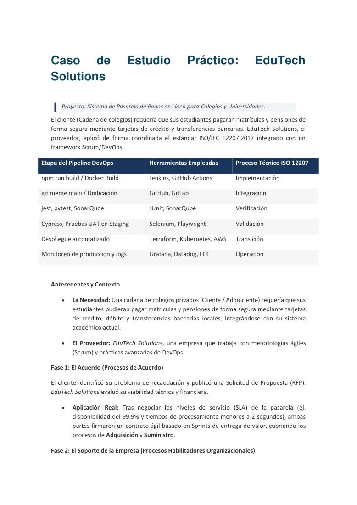
Fuente: página 1, «Caso de Estudio Práctico: EduTech Solutions», Semana 04.
| Fase | Hecho del caso | Grupo 12207 | Proceso |
|---|---|---|---|
| 1 | El cliente publica una RFP; EduTech evalúa viabilidad | Acuerdo | Adquisición / Suministro |
| 1 | SLA 99,9 % y < 2 s; contrato ágil por Sprints | Acuerdo | Adquisición (Establecimiento) + Suministro (Negociación y Firma) |
| 2 | Cuentas AWS, GitHub Enterprise, Jira | Habilitadores | Gestión de la Infraestructura |
| 2 | Arquitecto Senior + 2 devs de APIs de pago | Habilitadores | Gestión de RR.HH. |
| 2 | No interferir con otros productos fintech | Habilitadores | Gestión de la Cartera |
| 3 | Product Backlog de 6 Sprints | Gestión | Planificación del Proyecto |
| 3 | Riesgo de caída del banco → cola de reintentos | Gestión | Gestión de Riesgos (mitigación) |
| 3 | Sin push directo a PROD; rama + Code Review + tests | Gestión | Gestión de la Configuración |
| 4 | HU del padre de familia; microservicios en contenedores | Técnicos | Requisitos de partes interesadas; Arquitectura |
| 4 | Java/Node.js; Jenkins integra cobro y recibos | Técnicos | Implementación; Integración |
| 4 | 250 unitarias + SonarQube OWASP Top 10; UAT de directores | Técnicos | Verificación; Validación |
| 4 | Terraform un fin de semana; 50 000 transacciones; cambio de Visa sin apagar | Técnicos | Transición; Operación; Mantenimiento |
Mapeo pipeline DevOps → procesos técnicos
Técnica de análisis que asigna cada etapa automatizada del pipeline a un proceso de la 12207 según su propósito, no según la herramienta. Una misma herramienta puede servir a varios procesos (Cypress para regresión = Verificación; Cypress con UAT en staging = Validación).
Ej.: «git merge main» de un squad de Mibanco → Integración; «kubectl apply» en PROD → Transición.
Ojo en el examen · lo que EduTech NO evidencia
Procesos ausentes (pregunta típica «¿qué faltó?»): Gestión del Modelo de Ciclo de Vida, Gestión de la Calidad, Gestión del Conocimiento, Evaluación y Control, Gestión de Decisiones, Gestión de la Información, Medición, Aseguramiento de la Calidad, Análisis del Negocio, Análisis del Sistema y Retirada. La «cola de reintentos» es mitigación (reduce impacto antes), no contingencia.
17. Integración: SQAP (IEEE 730) frente a la 12207 y otras normas
| Aspecto | SQAP / IEEE 730 | ISO/IEC/IEEE 12207:2017 |
|---|---|---|
| Naturaleza | Plan (documento formal) / proceso de SQA | Marco de referencia de 30 procesos |
| Alcance | Un proyecto concreto | Todo el ciclo de vida, organización y proyectos |
| Pregunta que responde | ¿Cómo aseguraremos la calidad de ESTE producto? | ¿Qué procesos debe tener cualquier organización de SW? |
| Relación | Implementa el proceso 6.3.8 Aseguramiento de la Calidad | Contiene QA como 1 de 8 procesos de gestión técnica |
| Emisor | IEEE | ISO + IEC + IEEE |
| Norma | Emisor / año | Tema | Dónde aparece en S4 |
|---|---|---|---|
| IEEE 730 | IEEE, 2002 / 2014 | Plan / procesos de SQA | «IEEE 730 para SQAP» (elemento 3); plantilla de AlfaShop |
| ISO/IEC 25010 | ISO/IEC, 2011 (rev. 2023) | Modelo de calidad del producto | «ISO/IEC 25010 para calidad de producto» (elemento 3) |
| IEEE 1012 | IEEE, 2016 | V&V | Matriz V&V (complemento) |
| IEEE 1028 | IEEE, 2008 | Revisiones y auditorías de SW | Elemento 4 (complemento) |
| IEEE 828 | IEEE, 2012 | Gestión de configuración | Elemento 6, rol SCM (complemento) |
| ISO/IEC/IEEE 29119 | ISO/IEC/IEEE, 2013– (rev. 2022) | Pruebas de SW | Elemento 5 (complemento) |
| ISO/IEC/IEEE 12207 | ISO/IEC/IEEE, 2017 | Procesos del ciclo de vida del SW | Mazo de procesos y EduTech |
| ISO/IEC/IEEE 15288 | ISO/IEC/IEEE, 2015 | Procesos del ciclo de vida de sistemas | Definición de la 12207:2017 |
ISO/IEC 25010 — Systems and software Quality Requirements and Evaluation (SQuaRE): modelo de calidad
- Organismo: ISO/IEC JTC 1/SC 7. Versiones: 2011 (reemplazó a ISO/IEC 9126-1) y 2023.
- Propósito: modelo de calidad del producto y de calidad en uso; en el SQAP sirve para fijar los factores de calidad.
- Estructura (2011): 8 características de producto (adecuación funcional, eficiencia de desempeño, compatibilidad, usabilidad, fiabilidad, seguridad, mantenibilidad, portabilidad) + 5 de calidad en uso. La 2023 pasa a 9 (añade protección/safety; usabilidad → capacidad de interacción). Detalle en S3.
- Trampa: no es una norma de procesos ni de planes; en el SQAP se cita como estándar de producto.
IEEE Std 1028 — Software Reviews and Audits
- Organismo: IEEE. Versiones: 1988, 1997, 2008.
- Propósito: procedimientos para revisiones sistemáticas de SW.
- Estructura: 5 tipos: revisiones de gestión, revisiones técnicas, inspecciones, walk-throughs y auditorías.
- Trampa: la auditoría es independiente y evalúa conformidad con estándares/contratos; la inspección es entre pares y busca defectos.
IEEE Std 828 — Configuration Management in Systems and Software Engineering
- Organismo: IEEE. Versiones: 1983 … 2005, 2012.
- Propósito: requisitos mínimos de los procesos de SCM y del SCMP.
- Estructura: identificación de configuración, control de cambios, contabilidad de estado (status accounting), auditorías de configuración (FCA/PCA), gestión de releases.
- Trampa: el control de versiones (Git) es solo una parte de SCM; SCM incluye también control de cambios y auditorías.
ISO/IEC/IEEE 29119 — Software Testing
- Organismos: ISO/IEC JTC 1/SC 7 + IEEE. Versiones: partes 1–3 en 2013, parte 4 en 2015, revisiones 2021–2022.
- Propósito: conceptos, procesos, documentación y técnicas de prueba (reemplaza a IEEE 829 en documentación de pruebas).
- Estructura: Parte 1 conceptos, Parte 2 procesos de prueba, Parte 3 documentación, Parte 4 técnicas, Parte 5 pruebas basadas en palabras clave.
- Trampa: el «documento de pruebas» del rol Pruebas del SQAP se norma aquí, no en IEEE 730.
Coherencia entre plan y proceso
Un SQAP bien construido debe ser trazable a los procesos de la 12207 que toca: QA (6.3.8), SCM (6.3.5), Riesgos (6.3.4), Medición (6.3.7), Verificación (6.4.9) y Validación (6.4.11). Un SQAP sin gestión de riesgos ni medición deja huecos frente al marco.
Ej.: el SQAP de AlfaShop cubre QA, SCM, Verificación y Medición, pero no tiene sección de Gestión de Riesgos: brecha frente al proceso 6.3.4.
Ojo en el examen
«La 12207 reemplaza al SQAP» es falso: son complementarias. La 12207 dice que debe existir el proceso de Aseguramiento de la Calidad; IEEE 730 dice cómo planificarlo y ejecutarlo en un proyecto.
Siglas de la sesión (79)
| Sigla | Inglés | Español |
|---|---|---|
| API | Application Programming Interface | Interfaz de programación de aplicaciones |
| CDR | Critical Design Review | Revisión crítica del diseño |
| CI/CD | Continuous Integration / Continuous Delivery-Deployment | Integración continua / Entrega-Despliegue continuo |
| CMMI | Capability Maturity Model Integration | Modelo integrado de madurez de capacidades |
| COTS | Commercial Off-The-Shelf | Software comercial listo para usar |
| DoD | Definition of Done | Definición de Terminado |
| DoR | Definition of Ready | Definición de Listo |
| DORA | DevOps Research and Assessment | Investigación y evaluación DevOps (métricas de entrega) |
| E2E | End-to-End | Pruebas de extremo a extremo |
| EDT | Work Breakdown Structure (WBS) | Estructura de Desglose del Trabajo |
| ERS | Software Requirements Specification (SRS) | Especificación de Requisitos de Software |
| FCA | Functional Configuration Audit | Auditoría funcional de configuración |
| HRM | Human Resource Management | Gestión de Recursos Humanos |
| HU | User Story | Historia de Usuario |
| IaC | Infrastructure as Code | Infraestructura como código |
| IDEAL | Initiating, Diagnosing, Establishing, Acting, Learning | Modelo de mejora del SEI: Iniciar, Diagnosticar, Establecer, Actuar, Aprender |
| IEC | International Electrotechnical Commission | Comisión Electrotécnica Internacional |
| IEEE | Institute of Electrical and Electronics Engineers | Instituto de Ingenieros Eléctricos y Electrónicos |
| INACAL | — | Instituto Nacional de Calidad (Perú) |
| ISO | International Organization for Standardization | Organización Internacional de Normalización |
| IV&V | Independent Verification and Validation | Verificación y Validación Independientes |
| JTC 1/SC 7 | Joint Technical Committee 1 / Subcommittee 7 | Comité Técnico Conjunto 1 / Subcomité 7 (ingeniería de software y sistemas) |
| KLOC | Kilo Lines of Code | Miles de líneas de código |
| KM | Knowledge Management | Gestión del Conocimiento |
| KPI | Key Performance Indicator | Indicador clave de desempeño |
| MTTR | Mean Time To Repair/Restore | Tiempo medio de reparación/restauración |
| NC | Nonconformity | No conformidad |
| NFR | Non-Functional Requirements | Requisitos no funcionales |
| NTP | — | Norma Técnica Peruana |
| OTI | — | Oficina de Tecnologías de la Información |
| OWASP | Open Worldwide Application Security Project | Proyecto abierto mundial de seguridad de aplicaciones |
| PAM | Process Assessment Model | Modelo de evaluación de procesos |
| PCA | Physical Configuration Audit | Auditoría física de configuración |
| PCI DSS | Payment Card Industry Data Security Standard | Estándar de seguridad de datos de la industria de tarjetas de pago |
| PDCA/PHVA | Plan-Do-Check-Act | Planificar-Hacer-Verificar-Actuar |
| PDR | Preliminary Design Review | Revisión preliminar del diseño |
| PIR | Post-Implementation Review | Revisión post-implementación |
| PM | Project Manager | Jefe/Gerente de proyecto |
| PPM | Project Portfolio Management | Gestión de la cartera de proyectos |
| PR | Pull Request | Solicitud de integración de cambios |
| PRM | Process Reference Model | Modelo de referencia de procesos |
| QA | Quality Assurance | Aseguramiento de la calidad |
| QC | Quality Control | Control de la calidad |
| QG | Quality Gate | Puerta/umbral de calidad |
| QM | Quality Management | Gestión de la calidad |
| QP | Quality Planning | Planeamiento de la calidad |
| RACI | Responsible, Accountable, Consulted, Informed | Responsable, Aprobador, Consultado, Informado |
| RCA | Root Cause Analysis | Análisis de causa raíz |
| RFP | Request for Proposal | Solicitud de propuesta |
| RTM | Requirements Traceability Matrix | Matriz de trazabilidad de requisitos |
| S2ESC | Software and Systems Engineering Standards Committee | Comité de normas de ingeniería de software y sistemas (IEEE CS) |
| SaaS | Software as a Service | Software como servicio |
| SAST/DAST | Static / Dynamic Application Security Testing | Pruebas de seguridad estáticas / dinámicas de aplicaciones |
| SCAMPI | Standard CMMI Appraisal Method for Process Improvement | Método estándar de evaluación CMMI para la mejora de procesos |
| SCM | Software Configuration Management | Gestión de la configuración del software |
| SCMP | Software Configuration Management Plan | Plan de gestión de la configuración del software |
| SDD | Software Design Description | Descripción del diseño del software |
| SDLC | Software Development Life Cycle | Ciclo de vida del desarrollo de software |
| SDP | Software Development Plan | Plan de desarrollo del software |
| SEI | Software Engineering Institute | Instituto de Ingeniería de Software (Carnegie Mellon) |
| SGC | Quality Management System (QMS) | Sistema de Gestión de la Calidad |
| SLA | Service Level Agreement | Acuerdo de nivel de servicio |
| SPI | Software Process Improvement | Mejora del proceso de software |
| SPICE | Software Process Improvement and Capability dEtermination | Mejora y determinación de la capacidad del proceso de software (ISO/IEC 15504) |
| SQA | Software Quality Assurance | Aseguramiento de la calidad del software |
| SQAP | Software Quality Assurance Plan | Plan de aseguramiento de la calidad del software |
| SQuaRE | Systems and software Quality Requirements and Evaluation | Requisitos y evaluación de la calidad de sistemas y software (ISO/IEC 25000) |
| SRR | Software Requirements Review | Revisión de requisitos del software |
| SRS | Software Requirements Specification | Especificación de requisitos del software |
| STP | Software Test Plan | Plan de pruebas del software |
| StRS | Stakeholder Requirements Specification | Especificación de requisitos de las partes interesadas |
| SVVP | Software Verification and Validation Plan | Plan de verificación y validación del software |
| SVVR | Software Verification and Validation Report | Informe de verificación y validación del software |
| SW | Software | Software / programas |
| TQM | Total Quality Management | Gestión de la calidad total |
| UAT | User Acceptance Testing | Pruebas de aceptación del usuario |
| UI | User Interface | Interfaz de usuario |
| V&V | Verification and Validation | Verificación y Validación |
| WBS | Work Breakdown Structure | Estructura de desglose del trabajo (EDT) |
Glosario de términos
- Actividad (12207)
- Conjunto de tareas cohesivas de un proceso. Ej.: «Tratamiento» en Gestión de Riesgos.
- Adquisición
- Proceso de Acuerdo ejecutado por quien compra un producto o servicio. Ej.: un colegio publica una RFP.
- Análisis estático
- Examen del código sin ejecutarlo para hallar defectos, vulnerabilidades o deuda técnica. Ej.: SonarQube en el pipeline.
- Anomalía
- Condición que se desvía de lo esperado según requisitos o especificaciones. Ej.: total con IGV mal redondeado.
- Aseguramiento de la Calidad (proceso 12207)
- Proceso de gestión técnica que define la estrategia de QA y evalúa el seguimiento de procesos y estándares. Ej.: auditoría de Sprint en AlfaShop.
- Auditoría de proceso
- Verificación independiente de que el equipo sigue el proceso acordado. Ej.: revisar que ninguna HU pasó a Done sin DoD.
- Cobertura de código
- Porcentaje de código ejecutado por las pruebas. Ej.: 820 de 1 000 líneas = 82 %.
- Conformidad adaptada
- Cumplimiento de la 12207 con un subconjunto justificado de procesos. Ej.: omitir Retirada.
- Contingencia
- Plan que se activa cuando un riesgo ya ocurrió. Ej.: DBA de respaldo tras renuncia.
- Criterio de salida
- Condición exacta para dar por aprobada una fase. Ej.: «cero defectos críticos abiertos».
- Densidad de defectos
- Defectos por unidad de tamaño. Ej.: 0,4 defectos/KLOC.
- DevOps
- Cultura que integra desarrollo y operaciones con automatización. Ej.: CI/CD + IaC + monitoreo.
- DoD
- Definición de Terminado, dictada por el SQAP en el ejemplo ágil. Ej.: cobertura ≥ 85 % y QG PASSED.
- DoR
- Definición de Listo para que una HU entre al Sprint. Ej.: HU con criterios Gherkin.
- Gestión de la Calidad (organizacional)
- Proceso habilitador que fija metas corporativas de calidad y audita el apego a estándares. Ej.: meta «satisfacción ≥ 4,5».
- Gestión de la Configuración
- Proceso que identifica elementos bajo control y controla sus cambios. Ej.: PR obligatorio en Git.
- Gherkin
- Formato Given-When-Then para criterios de aceptación. Ej.: Dado/Cuando/Entonces del cupón.
- GitHub Flow
- Estrategia de ramas cortas hacia main vía PR. Ej.: feature/cupones → main.
- Independencia del SQA
- SQA no depende de Desarrollo y puede escalar NC al nivel más alto. Ej.: QA Lead reporta al CTO.
- Línea base
- Versión aprobada de un plan o configuración usada como referencia para medir desvíos. Ej.: cronograma v1 aprobado.
- Matriz de responsabilidades
- Tabla actividades × roles con X. Ej.: «Aprobar el Plan SQA» = Admin SQA + Admin Proyecto.
- Mitigación
- Tratamiento que reduce probabilidad o impacto de un riesgo antes de que ocurra. Ej.: cola de reintentos de EduTech.
- MTTR
- Tiempo medio de reparación/resolución. Ej.: bloqueantes < 4 h en AlfaShop.
- No conformidad
- Incumplimiento de un requisito o procedimiento. Ej.: HU sin Code Review en Done.
- Outcome (salida)
- Resultado observable de la ejecución exitosa de un proceso. Ej.: «los riesgos se identifican y tratan».
- PAM
- Modelo de Evaluación de Procesos con indicadores de capacidad. Ej.: ISO/IEC 33061.
- Pirámide de pruebas
- Proporción ideal de pruebas automatizadas: muchas unitarias, medianas de API, pocas de UI. Ej.: 70/20/10.
- PRM
- Modelo de Referencia de Procesos (propósito + resultados). Ej.: la 12207 para ISO/IEC 33000.
- Proceso de SW
- Conjunto de actividades y prácticas para desarrollar y mantener SW. Ej.: HU → código → PR → CI/CD.
- Quality Gate
- Umbrales que un build debe superar para avanzar. Ej.: QG estricto de SonarQube.
- Retirada (Disposal)
- Proceso técnico que finaliza un sistema de forma controlada. Ej.: migrar y borrar el SUM antiguo.
- Revisión por pares
- Examen del código por otro desarrollador antes del merge. Ej.: 2 séniores en AlfaShop.
- RFP
- Solicitud de Propuesta emitida por el adquiriente. Ej.: RFP de la cadena de colegios.
- Severidad
- Grado de impacto de un defecto. Ej.: Bloqueante, Alta, Media, Baja.
- SLA
- Acuerdo de Nivel de Servicio medible. Ej.: 99,9 % ≈ 43,2 min/mes de caída máxima.
- SPI
- Mejora del Proceso de SW. Ej.: crear SCM tras detectar 40 % de retrabajo.
- SQA
- Modelo sistemático y planeado de acciones para dar confianza adecuada de conformidad. Ej.: auditorías del proceso en RENIEC.
- SQAP
- Documento formal con métodos, herramientas, estándares y responsabilidades de calidad. Ej.: SQAP de AlfaShop.
- Suministro
- Proceso de Acuerdo ejecutado por el proveedor. Ej.: EduTech envía la propuesta técnica.
- Tailoring (adaptación)
- Ajuste de procesos de la norma al contexto. Ej.: pyme que simplifica Medición.
- Tarea (12207)
- Requerimiento, recomendación o acción que conduce a los resultados. Ej.: «definir SLA».
- Transición
- Proceso técnico de despliegue a producción con bajo impacto. Ej.: Terraform un fin de semana.
- Trazabilidad
- Enlace de cada requisito con diseño, código y pruebas. Ej.: RTM del sistema de admisión.
- UAT
- Pruebas de aceptación del usuario. Ej.: directores ingresan pagos simulados.
- Validación
- ¿Hacemos el producto correcto? Ej.: prototipado con el usuario final.
- Verificación
- ¿Hacemos el producto bien? Ej.: inspección de la arquitectura.